O que muda quando o agente lê o contexto antes de responder
CarrosselContexto antes da resposta
com a IA
O hedesign reúne tokens, componentes, movimento e regras de experiência para sistemas web em que uma pessoa decide e uma IA trabalha junto. É CSS e JavaScript puros, sem dependências e sem etapa de build, e funciona em qualquer stack.
Cada decisão do sistema sai de um destes seis princípios. Quando faltar um componente, volte a eles antes de inventar um padrão novo.
Fundo de papel quente, superfícies claras, muito respiro e um único botão em tinta por tela. O conteúdo é o que tem cor.
Seis tons percorrem o fluxo, do azul ao verde. O mesmo tom aparece no selo, na coluna, no calendário e na barra de passos.
O campo de pedido fica no mesmo lugar em todas as telas e já sabe o contexto. O orbe mostra se a IA está livre, trabalhando ou esperando você.
Nada pede confirmação antes. A ação acontece na hora e o aviso traz o Desfazer, com dez segundos de contagem.
O que vai ser publicado aparece na moldura do aparelho, do tamanho que o público vai ver. Os controles ficam em volta.
Aprovar, pedir ajuste ou negar cabem em uma barra, com tecla de atalho no computador e alvo de toque grande no celular.
| Arquivo | Para quê | Tamanho |
|---|---|---|
dist/hedesign.css | Tokens dos dois temas, base, casca e todos os componentes. | 165 KB |
dist/hedesign.js | Comportamentos em window.HE: tema, avisos, camadas, paleta, campo de pedido, arrasto e o resto. | sem dependências |
dist/hedesign-theme.js | Aplica o tema antes da primeira pintura. Vai no <head>. | 1 KB |
dist/hedesign-fonts.css | Inter variável pelo jsDelivr. Opcional: sem ele vale a fonte do sistema. | 1 KB |
tokens/ | Os mesmos tokens em JSON (DTCG), CSS isolado e tema para Tailwind v3 e v4. | 4 arquivos |
DESIGN.md | A especificação que um agente de IA lê para aplicar o sistema. | 1 arquivo |
skills/ | Skills para agentes aplicarem, construírem telas e auditarem o resultado. | 3 skills |
O caminho mais curto é carregar os arquivos pelo jsDelivr, direto do repositório. Fixe a versão na URL para a página não mudar sozinha quando sair uma versão nova.
<!doctype html>
<html lang="pt-BR">
<head>
<meta charset="utf-8">
<meta name="viewport" content="width=device-width, initial-scale=1, viewport-fit=cover">
<link rel="stylesheet" href="https://cdn.jsdelivr.net/gh/pycodebr/hedesign@1.0.1/dist/hedesign-fonts.css">
<link rel="stylesheet" href="https://cdn.jsdelivr.net/gh/pycodebr/hedesign@1.0.1/dist/hedesign.min.css">
<script src="https://cdn.jsdelivr.net/gh/pycodebr/hedesign@1.0.1/dist/hedesign-theme.js"></script>
</head>
<body>
<main class="he-main">
<div class="he-page he-page--narrow">
<header class="he-head">
<div class="he-head__main"><h1>Bom dia, Ana</h1><p class="he-head__sub">Dois itens esperam a sua decisão.</p></div>
<div class="he-head__actions"><button class="he-btn he-btn--primary">Revisar agora</button></div>
</header>
</div>
</main>
<script src="https://cdn.jsdelivr.net/gh/pycodebr/hedesign@1.0.1/dist/hedesign.min.js"></script>
</body>
</html>Para servir tudo do seu domínio, copie a pasta dist/ para os arquivos estáticos do projeto. O instalador faz isso e baixa as fontes com conferência de sha256.
# copia dist/ para static/hedesign e baixa a Inter para a mesma pasta
curl -fsSL https://raw.githubusercontent.com/pycodebr/hedesign/main/install.sh | bash -s -- --assets static/hedesign
# só as skills para agentes (Claude Code, Codex, Gemini CLI, OpenCode, Cursor, Hermes)
curl -fsSL https://raw.githubusercontent.com/pycodebr/hedesign/main/install.sh | bashO tema fica no atributo data-he-theme do <html>. O script hedesign-theme.js lê a escolha guardada em localStorage["he.theme"] (light, dark ou auto) e aplica antes da primeira pintura. Sem escolha guardada vale auto, que segue o sistema; data-he-theme-default="light" no <html> troca esse padrão. Sem o script, a página também segue o sistema.
<div class="he-row">
<button type="button" class="he-btn" data-he-theme-toggle aria-pressed="false"><svg class="he-i" aria-hidden="true" focusable="false"><use href="#he-i-moon"/></svg>Alternar tema</button>
<button type="button" class="he-btn he-btn--soft" data-doc="theme-auto">Seguir o sistema</button>
</div>HE.theme.get(); // "light" | "dark"
HE.theme.set("dark"); // "light" | "dark" | "auto"
HE.theme.toggle();
document.addEventListener("he:theme", (e) => console.log(e.detail.theme));O mesmo atributo funciona em qualquer elemento. Um trecho com data-he-theme="dark" fica escuro numa página clara, e o contrário com light. Serve para um rodapé, um destaque numa página de vendas ou uma comparação lado a lado, como as desta documentação.
Este painel usa os tokens do tema claro.
Este painel usa os tokens do tema escuro.
<div class="he-grid he-grid--2">
<div class="he-panel" data-he-theme="light"><h3 class="he-panel__title">Ilha clara</h3><p class="he-panel__text">Este painel usa os tokens do tema claro.</p><div class="he-row" style="margin-top:12px"><button class="he-btn he-btn--primary he-btn--sm">Principal</button><span class="he-badge" data-tone="green">Publicado</span></div></div>
<div class="he-panel" data-he-theme="dark"><h3 class="he-panel__title">Ilha escura</h3><p class="he-panel__text">Este painel usa os tokens do tema escuro.</p><div class="he-row" style="margin-top:12px"><button class="he-btn he-btn--primary he-btn--sm">Principal</button><span class="he-badge" data-tone="green">Publicado</span></div></div>
</div>Quem vai aplicar o hedesign com um agente entrega o link do repositório. A seção "Para agentes de IA" do README.md diz o que instalar, em que ordem ler e como conferir o resultado. A especificação completa está no DESIGN.md, o índice para janelas de contexto pequenas está no llms.txt, e as três skills em skills/ trazem o procedimento.
A paleta parte de um papel quente no tema claro e de um grafite levemente azulado no escuro. Cada token tem um papel, e o papel importa mais que o valor: troque o valor para adaptar a marca, mantenha o papel para o sistema continuar coerente. Clique em uma cor para copiar o nome do token.
Cinco degraus de texto. --he-ink também é a cor do botão principal: no tema escuro ele vira claro, e o texto dele vira --he-bg.
--he-ink-2 ou --he-muted. --he-faint é o limite para texto pequeno e ainda passa de 4,5:1 sobre o fundo. --he-ghost nunca carrega informação.box-shadow: inset 0 0 0 1px var(--he-line), e não border: a medida da caixa não muda e o contorno acompanha o raio.Os seis tons formam uma sequência, do frio ao verde, e servem para qualquer coisa que tenha etapas, categorias ou situações. Cada tom tem quatro papéis, e o texto sobre a superfície ou sobre o próprio fundo suave passa de 4,5:1 nos dois temas.
Ponha data-tone no elemento ou num ancestral. Ele passa a ter --tone, --tone-fg, --tone-bg e --tone-solid, e todo componente dentro dele lê essas quatro variáveis. Valores aceitos: blue, violet, pink, orange, teal, green, ai, accent, danger e neutral.
<div class="he-row">
<span class="he-badge" data-tone="blue">Ideia</span>
<span class="he-badge" data-tone="violet">Texto</span>
<span class="he-badge" data-tone="pink">Produção</span>
<span class="he-badge" data-tone="orange">Aprovação</span>
<span class="he-badge" data-tone="teal">Agendado</span>
<span class="he-badge" data-tone="green">Publicado</span>
<span class="he-badge" data-tone="neutral">Arquivado</span>
</div>/* no seu CSS: qualquer elemento novo acompanha o tom do contexto */
.meu-marcador { color: var(--tone-fg); background: var(--tone-bg); border-left: 3px solid var(--tone); }--he-rail) é a assinatura do sistema: aparece na marca, no item ativo da barra do celular e na contagem do aviso.A IA tem cor própria, do violeta ao azul, e ela nunca é usada para outra coisa. Onde essa cor aparece, a IA está agindo, sugerindo ou esperando um pedido.
Uma família só, a Inter, em quatro pesos de uso (400, 500, 600 e 700). Títulos são pesados e apertados, com espaçamento negativo; o texto de apoio é um degrau mais claro. Texto de leitura nunca fica abaixo de 12 px; só micro-rótulos, como contador, tecla e selo pequeno, usam de 10,5 a 11,5 px, sempre em peso 600 ou mais. Números que mudam usam algarismos tabulares.
h1 por tela, dentro de .he-head, seguido de uma frase que diz o que há para fazer ali..he-sec__head pode levar um contador ao lado (.he-sec__n)..he-overline, para rotular um painel ou um grupo. Nunca em botão ou em título.text-wrap: balance nos títulos e pretty nos parágrafos de apoio já vêm nas classes.Para artigo, ajuda ou documentação, envolva o conteúdo em .he-prose. Títulos, listas, links, código e citação saem formatados sem classe por elemento.
Abra a fila e leia a prévia do tamanho que o público vai ver. Se algo precisar mudar, marque o ponto na imagem e escreva o pedido em uma linha.
O primeiro resultado é rascunho. Leia, aponte o que errou e peça de novo.
O atalho fica em A, J e N. Veja a barra de decisão.
<div class="he-prose">
<h2>Como revisar um item</h2>
<p>Abra a fila e leia a prévia <strong>do tamanho que o público vai ver</strong>. Se algo precisar mudar, marque o ponto na imagem e escreva o pedido em uma linha.</p>
<ul><li>Aprovar agenda o item para o próximo horário livre.</li><li>Pedir ajuste devolve o item para a IA com os seus comentários.</li></ul>
<blockquote>O primeiro resultado é rascunho. Leia, aponte o que errou e peça de novo.</blockquote>
<p>O atalho fica em <code>A</code>, <code>J</code> e <code>N</code>. Veja a <a href="#decisao">barra de decisão</a>.</p>
</div>Escala de base 4. Dentro de um componente os saltos são de 4 e 8; entre blocos de uma tela, 24 e 32.
Tudo o que se clica é pílula: botões, chips, abas da barra, selos. Superfícies que guardam conteúdo usam raio de 14 ou 20 px. O raio pequeno fica para campos e itens de menu.
Quatro níveis. O que está parado na página tem só o contorno interno de 1 px. A sombra aparece quando algo responde ao ponteiro ou flutua sobre a tela.
::after, como o "x" das etiquetas de contexto..he-page), 860 px para leitura (.he-page--narrow) ou a largura toda (.he-page--full).Oitenta e dois ícones de traço, em grade de 24 px, com pontas arredondadas e espessura de 1,9. O tamanho segue o font-size e a cor segue o texto. O sprite já vem dentro do hedesign.js e entra na página sozinho. Clique em um ícone para copiar a marcação.
<svg class="he-i" aria-hidden="true" focusable="false"><use href="#he-i-check"/></svg>
<!-- tamanhos e variações -->
<svg class="he-i he-i--sm">…</svg> <!-- 14px -->
<svg class="he-i he-i--lg">…</svg> <!-- 22px -->
<svg class="he-i he-i--xl">…</svg> <!-- 28px -->
<svg class="he-i he-i--bold">…</svg> <!-- traço 2,8 -->
<svg class="he-i he-i--fill">…</svg> <!-- preenchido -->HE.icon("check"); // devolve a marcação do ícone
HE.icon("check", "he-i--sm");Sem JavaScript, inclua o conteúdo de dist/hedesign-sprite.svg no começo do <body>. Ícone que acompanha texto é decorativo e leva aria-hidden="true"; botão só com ícone leva aria-label.
O movimento é curto e explica o que aconteceu: de onde veio, para onde foi e o que está em andamento. Duas durações e uma curva cobrem quase tudo.
| Token | Valor | Uso |
|---|---|---|
--he-fast | 150 ms | Resposta ao ponteiro: cor, borda, sombra, escala ao pressionar. Também é a duração de toda saída. |
--he-med | 220 ms | Entrada de algo novo: cartão, gaveta, folha, paleta, aviso, marcador. |
--he-ease | cubic-bezier(.2, .7, .2, 1) | Entradas e deslocamentos. Sai rápido e pousa devagar. |
Clique em um quadro para repetir. Quem entra percorre poucos pixels (8 de baixo, 28 de lado, 40 numa folha) e aparece junto com a opacidade. Quem sai faz o caminho de volta em 150 ms.
Estes ficam em laço enquanto o estado durar. Todos são da IA ou de carregamento, e nenhum pisca rápido: o mais curto leva 1,1 s.
<div class="he-row">
<button class="he-btn he-btn--primary">Pressione: escala .97</button>
<a class="he-review" href="#movimento"><span>Passe o ponteiro: sobe 1px</span><span class="he-review__n">3</span></a>
<div class="he-views" data-he-views aria-label="Visão"><button type="button" class="he-views__item is-active" data-view="a" aria-pressed="true">O indicador</button><button type="button" class="he-views__item" data-view="b" aria-pressed="false">desliza</button><button type="button" class="he-views__item" data-view="c" aria-pressed="false">entre as opções</button></div>
</div>transform, opacity e, em contornos, box-shadow e background-position. Nada de animar largura, altura ou margem de conteúdo.prefers-reduced-motion, nenhuma animação roda. Cada estado continua legível sem ela: o orbe ganha um anel fixo, o brilho vira contorno liso e a contagem do aviso fica parada./* classes prontas para o que acabou de chegar à tela */
<div class="he-in-rise">…</div>
<div class="he-in-fade">…</div>
<div class="he-in-pop">…</div>
<ul class="he-stagger"><li>…</li><li>…</li><li>…</li></ul> <!-- filhos em sequência, 40 ms de distância -->A casca tem quatro peças, todas opcionais: o menu lateral do sistema, a barra do topo com o caminho, a barra da área com os destinos e, no rodapé, o campo de pedido à IA. No celular o menu lateral vira gaveta e os destinos da área descem para uma barra inferior.
As medidas se ajustam sozinhas. --he-sidebar-w, --he-topbar-h, --he-dock-h e --he-mnav-h valem zero até o elemento existir na página, e tudo o que é fixo se posiciona a partir delas. Elemento seu que fique grudado embaixo usa bottom: calc(var(--he-bottom) + 4px).
<body>
<aside class="he-sidebar" id="he-sidebar">
<div class="he-sidebar__head">
<a class="he-brand" href="/"><span class="he-brand__mark">N</span>
<span class="he-brand__text"><span class="he-brand__name">Estúdio Norte</span><span class="he-brand__sub">Conteúdo e campanhas</span></span></a>
</div>
<nav class="he-side" aria-label="Seções">
<div class="he-side__section">
<a class="he-side__item is-active" href="/" aria-current="page" data-he-tip="Painel">
<span class="he-side__icon"><svg class="he-i"><use href="#he-i-compass"/></svg></span>
<span class="he-side__text">Painel</span></a>
<a class="he-side__item" href="/conversas/" data-he-tip="Conversas">
<span class="he-side__icon"><svg class="he-i"><use href="#he-i-comment"/></svg></span>
<span class="he-side__text">Conversas</span><span class="he-count">4</span></a>
</div>
<div class="he-side__section">
<div class="he-side__label">Marketing</div>
<!-- mais itens -->
</div>
</nav>
<div class="he-sidebar__foot">
<button type="button" class="he-side__item" data-he-sidebar-toggle>
<span class="he-side__icon"><svg class="he-i"><use href="#he-i-list"/></svg></span>
<span class="he-side__text">Recolher menu</span></button>
</div>
</aside>
<header class="he-topbar">
<button type="button" class="he-topbar__menu" data-he-sidebar-toggle aria-label="Abrir menu"><svg class="he-i"><use href="#he-i-list"/></svg></button>
<nav class="he-crumbs" aria-label="Você está em">
<a href="/">Estúdio Norte</a><span class="he-crumbs__sep">/</span><span class="he-crumbs__current">Painel</span>
</nav>
<div class="he-topbar__actions">
<span class="he-live"><span class="he-wide">Tempo real</span></span>
<button type="button" class="he-topbar__btn"><span class="he-avatar">A</span><span class="he-wide">ana</span></button>
</div>
</header>
<div class="he-scrim-nav" aria-hidden="true"></div>
<main class="he-main">
<div class="he-top">…barra da área…</div>
<div class="he-page">…tela…</div>
<div class="he-dock" data-he-dock>…campo de pedido…</div>
<nav class="he-mnav" aria-label="Áreas">…cinco destinos no celular…</nav>
</main>
</body>Fica grudada abaixo da barra do topo e leva, nesta ordem: a marca da área, os destinos (cinco no máximo), o botão Novo, a ação principal com contador, a presença da IA, a busca e o tema. Ela se aperta sozinha conforme a própria largura: primeiro some o nome, depois os ícones dos destinos, o rótulo da presença e o texto longo da ação.
<div class="he-top" style="position:relative;top:0;z-index:1;border-radius:var(--he-r-lg);border:1px solid var(--he-line)">
<a class="he-top__brand" href="#casca"><span class="he-top__mark" aria-hidden="true"></span><span>Conteúdo</span></a>
<nav class="he-nav" aria-label="Áreas">
<a class="he-nav__item is-active" href="#casca" aria-current="page"><svg class="he-i" aria-hidden="true" focusable="false"><use href="#he-i-sun"/></svg><span>Hoje</span><span class="he-count">3</span></a>
<a class="he-nav__item" href="#casca"><svg class="he-i" aria-hidden="true" focusable="false"><use href="#he-i-bulb"/></svg><span>Referências</span></a>
<a class="he-nav__item" href="#casca"><svg class="he-i" aria-hidden="true" focusable="false"><use href="#he-i-board"/></svg><span>Planejamento</span></a>
<a class="he-nav__item" href="#casca"><svg class="he-i" aria-hidden="true" focusable="false"><use href="#he-i-library"/></svg><span>Biblioteca</span></a>
<a class="he-nav__item" href="#casca"><svg class="he-i" aria-hidden="true" focusable="false"><use href="#he-i-chart"/></svg><span>Resultados</span></a>
</nav>
<div class="he-top__actions">
<button type="button" class="he-new" aria-label="Novo"><svg class="he-i" aria-hidden="true" focusable="false"><use href="#he-i-plus"/></svg><span class="he-new__label">Novo</span></button>
<a class="he-review" href="#casca"><span>Revisar<span class="he-review__long"> agora</span></span><span class="he-review__n">3</span></a>
<button type="button" class="he-presence" data-state="working"><span class="he-orb" data-state="working" aria-hidden="true"></span><span class="he-presence__label">Trabalhando em 2</span></button>
<button type="button" class="he-iconbtn" aria-label="Buscar"><svg class="he-i" aria-hidden="true" focusable="false"><use href="#he-i-search"/></svg></button>
</div>
</div>Arraste para mudar a etapa ou a data.
O último elemento do cabeçalho de seção vai para a direita.
<header class="he-head">
<div class="he-head__main"><h1>Planejamento</h1><p class="he-head__sub">Arraste para mudar a etapa ou a data.</p></div>
<div class="he-head__actions"><button class="he-btn">Exportar</button><button class="he-btn he-btn--primary"><svg class="he-i" aria-hidden="true" focusable="false"><use href="#he-i-plus"/></svg>Novo item</button></div>
</header>
<section class="he-sec">
<div class="he-sec__head"><h2>Para você decidir</h2><span class="he-sec__n">3</span><a class="he-btn he-btn--ghost he-btn--sm" href="#casca">Abrir a fila</a></div>
<p class="he-small">O último elemento do cabeçalho de seção vai para a direita.</p>
</section>| Classe | O que faz |
|---|---|
.he-stack | Pilha vertical com 12 px. --sm usa 6 px e --lg, 24 px. |
.he-row | Linha que quebra, 8 px entre itens. --between separa as pontas. |
.he-grid | Grade que preenche com colunas de 232 px no mínimo (--min troca). --2, --3 e --4 fixam as colunas. |
.he-split | Conteúdo e coluna lateral de 300 a 380 px. --3 acrescenta uma coluna à esquerda. Abaixo de 900 px vira pilha. |
.he-toolbar | Linha de filtros à esquerda e ações à direita, acima de uma lista. |
.he-cards | Grade de cartões; --list empilha em linhas. |
Todo botão é pílula, tem 40 px de altura e encolhe para 97% ao ser pressionado. Cada tela tem um botão principal, em tinta. Os outros são contorno, suave ou fantasma.
<div class="he-row">
<button type="button" class="he-btn he-btn--primary">Principal</button>
<button type="button" class="he-btn">Padrão</button>
<button type="button" class="he-btn he-btn--soft">Suave</button>
<button type="button" class="he-btn he-btn--ghost">Fantasma</button>
<button type="button" class="he-btn he-btn--accent">Destaque</button>
<button type="button" class="he-btn he-btn--ok"><svg class="he-i" aria-hidden="true" focusable="false"><use href="#he-i-check"/></svg>Aprovar</button>
<button type="button" class="he-btn he-btn--danger">Negar</button>
<button type="button" class="he-btn he-btn--ai"><span class="he-orb he-orb--sm" aria-hidden="true"></span>Pedir à IA</button>
<button type="button" class="he-btn" disabled>Desligado</button>
</div><div class="he-row">
<button type="button" class="he-btn he-btn--sm">Pequeno</button>
<button type="button" class="he-btn">Médio</button>
<button type="button" class="he-btn he-btn--lg he-btn--primary">Grande</button>
<button type="button" class="he-btn"><svg class="he-i" aria-hidden="true" focusable="false"><use href="#he-i-download"/></svg>Baixar</button>
<button type="button" class="he-iconbtn" aria-label="Mais opções"><svg class="he-i" aria-hidden="true" focusable="false"><use href="#he-i-more"/></svg></button>
<button type="button" class="he-iconbtn he-iconbtn--solid" aria-label="Editar"><svg class="he-i" aria-hidden="true" focusable="false"><use href="#he-i-edit"/></svg></button>
<button type="button" class="he-iconbtn is-active" aria-label="Fixar"><svg class="he-i" aria-hidden="true" focusable="false"><use href="#he-i-pin"/></svg></button>
</div>
<div class="he-stack" style="max-width:320px;margin-top:12px"><button type="button" class="he-btn he-btn--primary he-btn--block">Largura total</button></div>O botão Novo abre o menu de criação. A ação com contador leva para a fila e some quando o número chega a zero.
<div class="he-row">
<button type="button" class="he-new" data-doc="menu" aria-haspopup="menu" aria-expanded="false"><svg class="he-i" aria-hidden="true" focusable="false"><use href="#he-i-plus"/></svg><span class="he-new__label">Novo</span></button>
<a class="he-review" href="#botoes"><span>Revisar agora</span><span class="he-review__n">3</span></a>
<span class="he-row"><kbd class="he-kbd he-kbd--always">Ctrl</kbd><kbd class="he-kbd he-kbd--always">K</kbd></span>
</div>| Variante | Uso |
|---|---|
--primary | A ação que a tela existe para fazer. Uma por tela ou por folha. |
| padrão | Ações secundárias ao lado da principal. |
--soft e --ghost | Ações de apoio em barras cheias e dentro de cartões. |
--accent | Confirmação dentro de um fluxo que já tem um botão em tinta na tela, como salvar numa folha. |
--ok e --danger | Decisões: aprovar e negar. O perigo só fica cheio depois do ponteiro. |
--ai | Tudo o que entrega a tarefa à IA. Leva o orbe pequeno antes do texto. |
Campos têm 40 px, raio de 10 px e contorno forte. No foco a borda fica azul e ganha um anel de 3 px. O rótulo fica acima do campo, nunca dentro dele.
O endereço não pode ter espaço. Tente estudio-norte.
O endereço não pode ter espaço. Tente estudio-norte.
<div class="he-grid he-grid--2">
<div class="he-field"><label for="f-nome">Nome da campanha</label><input class="he-input" id="f-nome" placeholder="Lançamento de março"></div>
<div class="he-field"><label for="f-canal">Canal</label><select class="he-input he-select" id="f-canal"><option>Feed</option><option>Vídeo curto</option><option>Boletim</option></select></div>
<div class="he-field"><label for="f-meta">Meta por semana</label><div class="he-suffix"><input class="he-input" id="f-meta" value="5" inputmode="numeric"><span>itens</span></div><span class="he-help">Conta só o que foi publicado.</span></div>
<div class="he-field"><label for="f-erro">Endereço</label><input class="he-input" id="f-erro" value="estudio norte" aria-invalid="true" aria-describedby="f-erro-msg"><p class="he-field__error" id="f-erro-msg">O endereço não pode ter espaço. Tente estudio-norte.</p></div>
</div>
<div class="he-field" style="margin-top:14px"><label for="f-texto">Descrição</label><textarea class="he-textarea" id="f-texto" placeholder="O que este item precisa dizer"></textarea></div>Uma linha tracejada que vira campo no foco. Enter guarda e o campo fica pronto para a próxima. Dentro de um elemento com tom, a borda do foco usa o tom.
<label class="he-quick" data-tone="blue"><svg class="he-i" aria-hidden="true" focusable="false"><use href="#he-i-plus"/></svg><input type="text" placeholder="Ideia rápida, Enter guarda" aria-label="Ideia rápida"></label><div class="he-stack">
<div class="he-toggle"><div class="he-toggle__text"><b>Publicar sozinho depois de aprovado</b><small>O item entra no próximo horário livre da agenda.</small></div><button type="button" class="he-switch" role="switch" aria-checked="true" aria-label="Publicar sozinho depois de aprovado"><span class="he-switch__knob"></span></button></div>
<div class="he-toggle"><div class="he-toggle__text"><b>Avisar por e-mail</b><small>Um resumo por dia, às 9h.</small></div><button type="button" class="he-switch" role="switch" aria-checked="false" aria-label="Avisar por e-mail"><span class="he-switch__knob"></span></button></div>
<div class="he-row"><label class="he-checkbox"><input type="checkbox" checked>Incluir legendas</label><label class="he-checkbox"><input type="checkbox">Incluir rascunhos</label></div>
<div class="he-row" role="radiogroup" aria-label="Quando a IA pode agir fora do sistema"><label class="he-radio"><input type="radio" name="doc-perm" checked>Perguntar sempre</label><label class="he-radio"><input type="radio" name="doc-perm">Permitir o que já aprovei</label></div>
</div>O campo de pedido no padrão dos chats de IA: o texto e a barra de ações ficam dentro do mesmo contorno. A altura acompanha o texto, Enter envia e Shift + Enter quebra a linha. É o mesmo componente do campo fixo do rodapé, de um chat e de um comentário.
<form class="he-composer is-empty" data-doc-composer novalidate>
<div class="he-composer__box">
<textarea class="he-composer__input" rows="1" placeholder="Descreva o que você quer criar" aria-label="Pedido"></textarea>
<div class="he-composer__bar">
<span class="he-composer__tools">
<button type="button" class="he-composer__tool" aria-label="Anexar arquivo"><svg class="he-i" aria-hidden="true" focusable="false"><use href="#he-i-paperclip"/></svg></button>
<select class="he-composer__pill" aria-label="Formato"><option>Carrossel</option><option>Vídeo curto</option><option>Texto</option></select>
<label class="he-composer__check"><input type="checkbox" checked>Usar a biblioteca</label>
</span>
<span class="he-composer__actions"><button class="he-composer__send" type="submit" aria-label="Enviar"></button></span>
</div>
</div>
<p class="he-composer__hint"><kbd>Enter</kbd> envia · <kbd>Shift</kbd> + <kbd>Enter</kbd> quebra a linha</p>
</form>aria-invalid e aria-describedby..he-formsec.is-dirty).Diz a etapa ou a situação. O ponto leva a cor viva e o texto, a cor de texto do tom.
<div class="he-stack">
<div class="he-row"><span class="he-badge" data-tone="blue">Ideia</span><span class="he-badge" data-tone="violet">Texto</span><span class="he-badge" data-tone="pink">Produção</span><span class="he-badge" data-tone="orange">Aprovação</span><span class="he-badge" data-tone="teal">Agendado</span><span class="he-badge" data-tone="green">Publicado</span><span class="he-badge" data-tone="neutral">Arquivado</span></div>
<div class="he-row"><span class="he-badge he-badge--solid" data-tone="blue">Ideia</span><span class="he-badge he-badge--solid" data-tone="violet">Texto</span><span class="he-badge he-badge--solid" data-tone="pink">Produção</span><span class="he-badge he-badge--solid" data-tone="orange">Aprovação</span><span class="he-badge he-badge--solid" data-tone="teal">Agendado</span><span class="he-badge he-badge--solid" data-tone="green">Publicado</span></div>
<div class="he-row"><span class="he-badge he-badge--sm" data-tone="pink">Pequeno</span><span class="he-badge" data-tone="pink">Médio</span><span class="he-badge he-badge--lg" data-tone="pink">Grande</span><span class="he-badge he-badge--dot" data-tone="pink" title="Produção">Produção</span><button type="button" class="he-badge" data-tone="violet">Texto<svg class="he-i" aria-hidden="true" focusable="false"><use href="#he-i-chevron_down"/></svg></button></div>
</div>Em um sistema em que pessoa e IA se revezam, todo item diz de quem é a vez. Você é tinta com anel laranja; a IA é a cor dela com o orbe.
<div class="he-row">
<span class="he-who" data-who="you">com você</span>
<span class="he-who" data-who="ai">com a IA</span>
<span class="he-who he-who--mini" data-who="you" title="com você">com você</span>
<span class="he-who he-who--mini" data-who="ai" title="com a IA">com a IA</span>
</div><div class="he-row">
<span class="he-tag">lançamento</span><span class="he-tag"><svg class="he-i he-i--sm" aria-hidden="true" focusable="false"><use href="#he-i-tag"/></svg>vídeo</span>
<span class="he-count">3</span>
<span class="he-sec__n">12</span>
<kbd class="he-kbd he-kbd--always">A</kbd>
<span class="he-delta he-delta--up"><svg class="he-i he-i--sm" aria-hidden="true" focusable="false"><use href="#he-i-arrow_up"/></svg>12% <small>vs. semana passada</small></span>
<span class="he-delta he-delta--down"><svg class="he-i he-i--sm" aria-hidden="true" focusable="false"><use href="#he-i-arrow_down"/></svg>4%</span>
<span class="he-delta">estável</span>
<span class="he-sync">Planilha</span>
<span class="he-avatar">A</span>
<span class="he-avatar he-avatar--ring"><span>N</span></span>
<span class="he-avatars"><span class="he-avatar">A</span><span class="he-avatar">R</span><span class="he-avatar">+3</span></span>
<span class="he-live">Tempo real</span>
</div>O cartão é a unidade do sistema: uma miniatura, um título, a etapa, a data e de quem é a vez. A faixa de 3 px sob a miniatura leva a cor do tom. Sem imagem, a miniatura mostra o texto do item sobre o fundo suave do tom. O cartão inteiro é clicável pelo link do título.
 CarrosselCarrossel
CarrosselCarrossel<div class="he-cards">
<article class="he-card" data-tone="orange">
<div class="he-card__thumb"><img src="examples/media/s1.svg" alt="" loading="lazy" draggable="false"><span class="he-card__kind"><svg class="he-i" aria-hidden="true" focusable="false"><use href="#he-i-carousel"/></svg>Carrossel</span></div>
<div class="he-card__body">
<h3 class="he-card__title"><a class="he-card__link" href="#cartoes">5 erros no seu primeiro agente</a></h3>
<div class="he-card__meta"><span class="he-badge he-badge--sm" data-tone="orange">Aprovação</span><span class="he-card__date"><svg class="he-i" aria-hidden="true" focusable="false"><use href="#he-i-clock"/></svg>qui 26/11 · 18h</span><span class="he-card__camp">lançamento</span></div>
<div class="he-card__foot"><span class="he-who" data-who="you">com você</span></div>
</div>
</article>
<article class="he-card he-glow" data-tone="violet" data-he-glow="IA trabalhando" aria-busy="true">
<div class="he-card__thumb"><div class="he-card__poster"><span>O prompt que mudou meu fluxo de trabalho com agentes</span></div><span class="he-card__kind"><svg class="he-i" aria-hidden="true" focusable="false"><use href="#he-i-carousel"/></svg>Carrossel</span></div>
<div class="he-card__body">
<h3 class="he-card__title"><a class="he-card__link" href="#cartoes">O prompt que mudou meu fluxo</a></h3>
<div class="he-card__meta"><span class="he-badge he-badge--sm" data-tone="violet">Texto</span><span class="he-card__date"><svg class="he-i" aria-hidden="true" focusable="false"><use href="#he-i-clock"/></svg>sáb 28/11 · 12h</span></div>
<div class="he-card__foot"><span class="he-who" data-who="ai">com a IA</span></div>
</div>
</article>
<article class="he-card is-suggestion" data-tone="blue">
<div class="he-card__thumb"><div class="he-card__poster"><span>Bastidores: a mesa, o roteiro impresso e o erro que ficou no vídeo</span></div><span class="he-card__kind"><svg class="he-i" aria-hidden="true" focusable="false"><use href="#he-i-story"/></svg>Story</span></div>
<div class="he-card__body">
<h3 class="he-card__title"><a class="he-card__link" href="#cartoes">Sugestão da IA para sexta</a></h3>
<div class="he-card__meta"><span class="he-badge he-badge--sm" data-tone="blue">Ideia</span></div>
<div class="he-card__foot"><span class="he-who" data-who="ai">com a IA</span></div>
</div>
</article>
</div>Para listas. Com espaço, o rodapé vai para a direita.
 Carrossel
Carrossel<div class="he-cards he-cards--list">
<article class="he-card he-card--row" data-tone="teal">
<div class="he-card__thumb"><img src="examples/media/s9.svg" alt="" loading="lazy" draggable="false"><span class="he-card__kind"><svg class="he-i" aria-hidden="true" focusable="false"><use href="#he-i-carousel"/></svg>Carrossel</span></div>
<div class="he-card__body">
<h3 class="he-card__title"><a class="he-card__link" href="#cartoes">Checklist de publicação sem susto</a></h3>
<div class="he-card__meta"><span class="he-badge he-badge--sm" data-tone="teal">Agendado</span><span class="he-card__date"><svg class="he-i" aria-hidden="true" focusable="false"><use href="#he-i-clock"/></svg>amanhã · 12h</span><span class="he-card__camp">lançamento</span></div>
<div class="he-card__foot"><span class="he-who" data-who="ai">com a IA</span></div>
</div>
</article>
<article class="he-card he-card--row" data-tone="blue">
<div class="he-card__thumb"><div class="he-card__poster"><span>Bastidores</span></div><span class="he-card__kind"><svg class="he-i" aria-hidden="true" focusable="false"><use href="#he-i-story"/></svg>Story</span></div>
<div class="he-card__body">
<h3 class="he-card__title"><a class="he-card__link" href="#cartoes">Bastidores da gravação da aula 3</a></h3>
<div class="he-card__meta"><span class="he-badge he-badge--sm" data-tone="blue">Ideia</span></div>
<div class="he-card__foot"><span class="he-who" data-who="you">com você</span></div>
</div>
</article>
</div>A barra do tom vai para a esquerda e o fundo fica na cor suave. A sugestão da IA aparece tracejada até ser aceita.


<div class="he-cards">
<article class="he-card he-card--cal" data-tone="orange"><div class="he-card__thumb"><img src="examples/media/s1.svg" alt="" loading="lazy"><span class="he-card__kind"><svg class="he-i" aria-hidden="true" focusable="false"><use href="#he-i-carousel"/></svg></span></div><div class="he-card__body"><h3 class="he-card__title"><a class="he-card__link" href="#cartoes">5 erros no seu primeiro agente</a></h3><div class="he-card__meta"><span class="he-card__date">18h</span></div><div class="he-card__foot"><span class="he-who he-who--mini" data-who="you" title="com você">com você</span></div></div></article>
<article class="he-card he-card--cal" data-tone="pink"><div class="he-card__thumb"><img src="examples/media/s6.svg" alt="" loading="lazy"><span class="he-card__kind"><svg class="he-i" aria-hidden="true" focusable="false"><use href="#he-i-reel"/></svg></span></div><div class="he-card__body"><h3 class="he-card__title"><a class="he-card__link" href="#cartoes">Python em 30 segundos</a></h3><div class="he-card__meta"><span class="he-card__date">18h</span></div><div class="he-card__foot"><span class="he-who he-who--mini" data-who="you" title="com você">com você</span></div></div></article>
<article class="he-card he-card--cal is-suggestion" data-tone="violet"><div class="he-card__thumb"><span class="he-card__kind"><svg class="he-i" aria-hidden="true" focusable="false"><use href="#he-i-image"/></svg></span></div><div class="he-card__body"><h3 class="he-card__title"><a class="he-card__link" href="#cartoes">Depoimento de quem terminou o curso</a></h3><div class="he-card__meta"><span class="he-card__date">18h</span></div><div class="he-card__foot"><span class="he-who he-who--mini" data-who="ai" title="com a IA">com a IA</span></div></div></article>
<article class="he-card he-card--cal" data-tone="green"><div class="he-card__thumb"><img src="examples/media/s12.svg" alt="" loading="lazy"><span class="he-card__kind"><svg class="he-i" aria-hidden="true" focusable="false"><use href="#he-i-carousel"/></svg></span></div><div class="he-card__body"><h3 class="he-card__title"><a class="he-card__link" href="#cartoes">Como eu organizo um repositório</a></h3><div class="he-card__meta"><span class="he-card__date">dom 22/11</span></div><div class="he-card__foot"><span class="he-who he-who--mini" data-who="ai" title="com a IA">com a IA</span></div></div></article>
</div>Só a imagem em 4:5, com o tipo no canto, a data embaixo e um ponto na cor do tom.
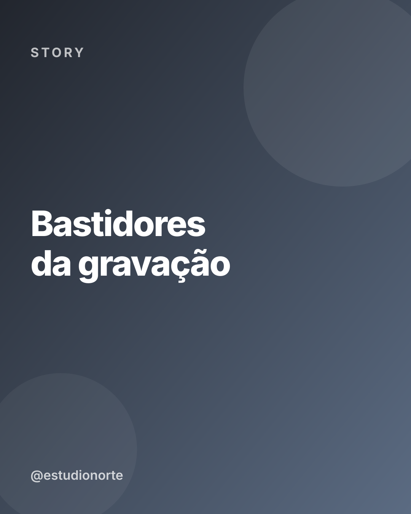
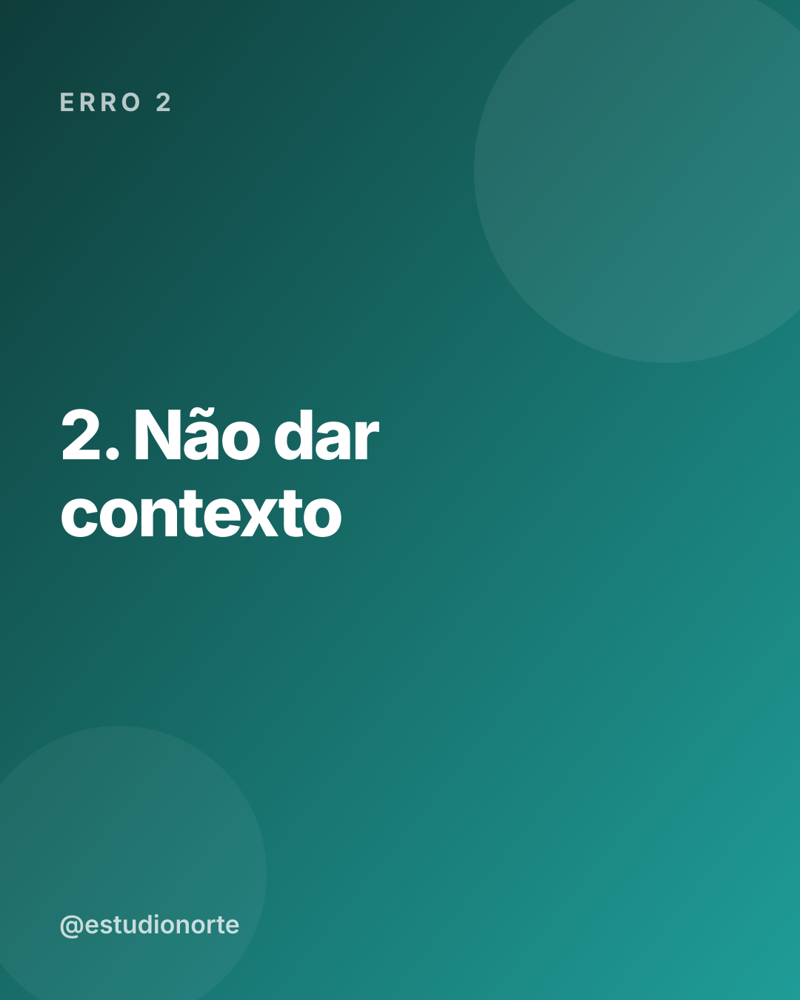

<div class="he-grid3">
<article class="he-card he-card--tile" data-tone="teal"><div class="he-card__thumb"><img src="examples/media/s9.svg" alt="" loading="lazy"><span class="he-card__kind"><svg class="he-i" aria-hidden="true" focusable="false"><use href="#he-i-carousel"/></svg></span></div><div class="he-card__body"><h3 class="he-card__title"><a class="he-card__link" href="#cartoes">Checklist de publicação</a></h3><div class="he-card__meta"><span class="he-badge" data-tone="teal">Agendado</span><span class="he-card__date">amanhã · 12h</span></div></div></article>
<article class="he-card he-card--tile" data-tone="teal"><div class="he-card__thumb"><img src="examples/media/s7.svg" alt="" loading="lazy"><span class="he-card__kind"><svg class="he-i" aria-hidden="true" focusable="false"><use href="#he-i-story"/></svg></span></div><div class="he-card__body"><h3 class="he-card__title"><a class="he-card__link" href="#cartoes">Bastidores</a></h3><div class="he-card__meta"><span class="he-badge" data-tone="teal">Agendado</span><span class="he-card__date">hoje · 20h</span></div></div></article>
<article class="he-card he-card--tile" data-tone="blue"><div class="he-card__thumb"><div class="he-card__poster"><span>Mostrar a mesa e o roteiro impresso</span></div><span class="he-card__kind"><svg class="he-i" aria-hidden="true" focusable="false"><use href="#he-i-story"/></svg></span></div><div class="he-card__body"><h3 class="he-card__title"><a class="he-card__link" href="#cartoes">Bastidores da aula 3</a></h3><div class="he-card__meta"><span class="he-badge" data-tone="blue">Ideia</span></div></div></article>
<div class="he-grid3__sep">Já publicado</div>
<article class="he-card he-card--tile" data-tone="green"><div class="he-card__thumb"><img src="examples/media/s3.svg" alt="" loading="lazy"><span class="he-card__kind"><svg class="he-i" aria-hidden="true" focusable="false"><use href="#he-i-carousel"/></svg></span></div><div class="he-card__body"><h3 class="he-card__title"><a class="he-card__link" href="#cartoes">Erro 2</a></h3><div class="he-card__meta"><span class="he-badge" data-tone="green">Publicado</span><span class="he-card__date">dom 22/11</span></div></div></article>
<article class="he-card he-card--tile" data-tone="green"><div class="he-card__thumb"><img src="examples/media/s4.svg" alt="" loading="lazy"><span class="he-card__kind"><svg class="he-i" aria-hidden="true" focusable="false"><use href="#he-i-carousel"/></svg></span></div><div class="he-card__body"><h3 class="he-card__title"><a class="he-card__link" href="#cartoes">Erro 3</a></h3><div class="he-card__meta"><span class="he-badge" data-tone="green">Publicado</span><span class="he-card__date">sex 20/11</span></div></div></article>
<article class="he-card he-card--tile" data-tone="green"><div class="he-card__thumb"><img src="examples/media/s6.svg" alt="" loading="lazy"><span class="he-card__kind"><svg class="he-i" aria-hidden="true" focusable="false"><use href="#he-i-reel"/></svg></span></div><div class="he-card__body"><h3 class="he-card__title"><a class="he-card__link" href="#cartoes">Python em 30 segundos</a></h3><div class="he-card__meta"><span class="he-badge" data-tone="green">Publicado</span><span class="he-card__date">qua 18/11</span></div></div></article>
</div>Superfície simples para agrupar informação ao lado do conteúdo principal. O título é um rótulo em caixa alta.
<div class="he-grid he-grid--2">
<div class="he-panel"><h3 class="he-panel__title">Resumo</h3><div class="he-panel__text">Sete lâminas, texto aprovado na terça. Falta a arte da capa.</div></div>
<div class="he-panel he-panel--soft"><h3 class="he-panel__title">Conferências</h3>
<ul class="he-checks"><li class="he-check">Dimensões 1080 × 1350 em todas as lâminas</li><li class="he-check" data-state="warn">Legenda com 2.310 caracteres<small>O limite da plataforma é 2.200.</small></li><li class="he-check" data-state="fail">Lâmina 4 sem texto alternativo</li><li class="he-check" data-state="wait">Revisão de fatos em andamento</li></ul>
</div>
</div>Uma coluna por etapa, cada uma no tom dela: faixa de 3 px no topo, título na cor de texto do tom e fundo levemente tingido. Os cartões são arrastáveis; no celular cada coluna ocupa 84% da largura e a rolagem encaixa.
CarrosselCarrossel<div class="he-board" data-doc-board>
<section class="he-col" data-tone="blue"><div class="he-col__head"><h3 class="he-col__title">Ideia</h3><span class="he-col__n">2</span></div>
<div class="he-col__top"><label class="he-quick"><svg class="he-i" aria-hidden="true" focusable="false"><use href="#he-i-plus"/></svg><input type="text" placeholder="Ideia rápida" aria-label="Ideia rápida"></label></div>
<div class="he-col__list" data-he-drop>
<article class="he-card he-card--board" data-tone="blue" data-he-drag><div class="he-card__thumb"><div class="he-card__poster"><span>Mostrar a mesa e o roteiro impresso</span></div><span class="he-card__kind"><svg class="he-i" aria-hidden="true" focusable="false"><use href="#he-i-story"/></svg>Story</span></div><div class="he-card__body"><h3 class="he-card__title">Bastidores da aula 3</h3><div class="he-card__foot"><span class="he-who" data-who="you">com você</span></div></div></article>
</div></section>
<section class="he-col" data-tone="violet"><div class="he-col__head"><h3 class="he-col__title">Texto</h3><span class="he-col__n">1</span></div>
<div class="he-col__list" data-he-drop>
<article class="he-card he-card--board he-glow" data-tone="violet" data-he-drag data-he-glow="IA trabalhando"><div class="he-card__thumb"><div class="he-card__poster"><span>O prompt que mudou meu fluxo</span></div><span class="he-card__kind"><svg class="he-i" aria-hidden="true" focusable="false"><use href="#he-i-carousel"/></svg>Carrossel</span></div><div class="he-card__body"><h3 class="he-card__title">O prompt que mudou meu fluxo</h3><div class="he-card__meta"><span class="he-card__date"><svg class="he-i" aria-hidden="true" focusable="false"><use href="#he-i-clock"/></svg>sáb 28/11 · 12h</span></div><div class="he-card__foot"><span class="he-who" data-who="ai">com a IA</span></div></div></article>
</div></section>
<section class="he-col" data-tone="orange"><div class="he-col__head"><h3 class="he-col__title">Aprovação</h3><span class="he-col__n">1</span></div>
<div class="he-col__list" data-he-drop>
<article class="he-card he-card--board" data-tone="orange" data-he-drag><div class="he-card__thumb"><img src="examples/media/s1.svg" alt="" loading="lazy" draggable="false"><span class="he-card__kind"><svg class="he-i" aria-hidden="true" focusable="false"><use href="#he-i-carousel"/></svg>Carrossel</span></div><div class="he-card__body"><h3 class="he-card__title">5 erros no seu primeiro agente</h3><div class="he-card__meta"><span class="he-card__date"><svg class="he-i" aria-hidden="true" focusable="false"><use href="#he-i-clock"/></svg>qui 26/11 · 18h</span></div><div class="he-card__foot"><span class="he-who" data-who="you">com você</span></div></div></article>
</div></section>
<section class="he-col is-locked" data-tone="green"><div class="he-col__head"><h3 class="he-col__title">Publicado</h3><span class="he-col__n">0</span></div>
<div class="he-col__list"></div></section>
</div>HE.dnd(document.querySelector(".he-board"), {
item: "[data-he-drag]",
zone: "[data-he-drop]",
onDrop(ctx) {
// ctx.item, ctx.from, ctx.to, ctx.index e ctx.revert()
salvar(ctx).catch(() => ctx.revert());
HE.toast({ text: "Movido para Aprovação.", onUndo: () => ctx.revert() });
}
});Semana em sete colunas; abaixo de 900 px vira agenda, um dia por linha. O dia de hoje tem o número em tinta. Dia vazio mostra o convite tracejado na cor da IA.
<div class="he-cal">
<div class="he-cal__day"><div class="he-cal__head"><span class="he-cal__num">23</span>seg</div><div class="he-cal__list"><article class="he-card he-card--cal" data-tone="green"><div class="he-card__thumb"><span class="he-card__kind"><svg class="he-i" aria-hidden="true" focusable="false"><use href="#he-i-carousel"/></svg></span></div><div class="he-card__body"><h3 class="he-card__title">Erro 2</h3><div class="he-card__meta"><span class="he-card__date">12h</span></div></div></article></div></div>
<div class="he-cal__day is-empty"><div class="he-cal__head"><span class="he-cal__num">24</span>ter</div><div class="he-cal__list"></div><button type="button" class="he-cal__add"><svg class="he-i" aria-hidden="true" focusable="false"><use href="#he-i-sparkles"/></svg>Sugerir</button></div>
<div class="he-cal__day is-today"><div class="he-cal__head"><span class="he-cal__num">25</span>qua</div><div class="he-cal__list"><article class="he-card he-card--cal" data-tone="teal"><div class="he-card__thumb"><span class="he-card__kind"><svg class="he-i" aria-hidden="true" focusable="false"><use href="#he-i-story"/></svg></span></div><div class="he-card__body"><h3 class="he-card__title">Bastidores</h3><div class="he-card__meta"><span class="he-card__date">20h</span></div></div></article></div></div>
<div class="he-cal__day"><div class="he-cal__head"><span class="he-cal__num">26</span>qui</div><div class="he-cal__list"><article class="he-card he-card--cal" data-tone="orange"><div class="he-card__thumb"><span class="he-card__kind"><svg class="he-i" aria-hidden="true" focusable="false"><use href="#he-i-carousel"/></svg></span></div><div class="he-card__body"><h3 class="he-card__title">5 erros no seu primeiro agente</h3><div class="he-card__meta"><span class="he-card__date">18h</span></div></div></article></div></div>
<div class="he-cal__day"><div class="he-cal__head"><span class="he-cal__num">27</span>sex</div><div class="he-cal__list"><article class="he-card he-card--cal" data-tone="pink"><div class="he-card__thumb"><span class="he-card__kind"><svg class="he-i" aria-hidden="true" focusable="false"><use href="#he-i-reel"/></svg></span></div><div class="he-card__body"><h3 class="he-card__title">Python em 30 segundos</h3><div class="he-card__meta"><span class="he-card__date">18h</span></div></div></article></div></div>
<div class="he-cal__day"><div class="he-cal__head"><span class="he-cal__num">28</span>sáb</div><div class="he-cal__list"><article class="he-card he-card--cal is-suggestion" data-tone="violet"><div class="he-card__thumb"><span class="he-card__kind"><svg class="he-i" aria-hidden="true" focusable="false"><use href="#he-i-image"/></svg></span></div><div class="he-card__body"><h3 class="he-card__title">Depoimento</h3><div class="he-card__meta"><span class="he-card__date">12h</span></div></div></article></div></div>
<div class="he-cal__day is-empty"><div class="he-cal__head"><span class="he-cal__num">29</span>dom</div><div class="he-cal__list"></div><button type="button" class="he-cal__add"><svg class="he-i" aria-hidden="true" focusable="false"><use href="#he-i-sparkles"/></svg>Sugerir</button></div>
</div><div class="he-goals">
<span class="he-goal is-done"><svg class="he-i" aria-hidden="true" focusable="false"><use href="#he-i-check"/></svg>Carrosséis <b>3 de 3</b></span>
<span class="he-goal"><svg class="he-i" aria-hidden="true" focusable="false"><use href="#he-i-reel"/></svg>Vídeos <b>1 de 2</b></span>
<span class="he-goal"><svg class="he-i" aria-hidden="true" focusable="false"><use href="#he-i-story"/></svg>Stories <b>4 de 7</b></span>
</div>Mostra onde o item está no fluxo. Cada passo pode ter o seu tom; os que já passaram ficam preenchidos e o atual ganha um anel. Com pouco espaço, só o rótulo do passo atual aparece.
<div class="he-stack he-stack--lg">
<ol class="he-steps" aria-label="Etapas">
<li class="he-steps__step is-done" data-tone="blue"><span>Ideia</span></li>
<li class="he-steps__step is-done" data-tone="violet"><span>Texto</span></li>
<li class="he-steps__step is-current" data-tone="pink" aria-current="step"><span>Produção</span></li>
<li class="he-steps__step" data-tone="orange"><span>Aprovação</span></li>
<li class="he-steps__step" data-tone="teal"><span>Agendado</span></li>
<li class="he-steps__step" data-tone="green"><span>Publicado</span></li>
</ol>
<ol class="he-steps" aria-label="Cadastro">
<li class="he-steps__step is-done"><span>Conta</span></li>
<li class="he-steps__step is-current" aria-current="step"><span>Equipe</span></li>
<li class="he-steps__step"><span>Pagamento</span></li>
</ol>
<ol class="he-steps he-steps--bar" aria-label="Etapas, versão compacta">
<li class="he-steps__step is-done" data-tone="blue"><span>Ideia</span></li>
<li class="he-steps__step is-done" data-tone="violet"><span>Texto</span></li>
<li class="he-steps__step is-current" data-tone="pink"><span>Produção</span></li>
<li class="he-steps__step" data-tone="orange"><span>Aprovação</span></li>
<li class="he-steps__step" data-tone="teal"><span>Agendado</span></li>
<li class="he-steps__step" data-tone="green"><span>Publicado</span></li>
</ol>
</div>HE.steps(document.querySelector(".he-steps"), 3); // marca os três primeiros como feitos e o quarto como atualQuando a IA devolve uma versão nova, a diferença aparece no próprio texto.
O primeiro resultado é a resposta final um rascunho. Leia, aponte o que errou e peça de novo, com um pedido por vez.
O primeiro resultado é a resposta final um rascunho. Leia, aponte o que errou e peça de novo, com um pedido por vez.
<p class="he-diff">O primeiro resultado é <del>a resposta final</del> <ins>um rascunho</ins>. Leia, aponte o que errou e peça de novo<ins>, com um pedido por vez</ins>.</p>O erro diz o que aconteceu, o que ficou preservado e qual é o próximo passo, sempre com um botão.
<div class="he-stack">
<div class="he-callout"><svg class="he-i" aria-hidden="true" focusable="false"><use href="#he-i-info"/></svg><div class="he-callout__main"><div class="he-callout__title">A agenda desta semana está completa</div><div class="he-callout__text">Novos itens aprovados entram a partir de segunda.</div></div></div>
<div class="he-callout" data-tone="orange"><svg class="he-i" aria-hidden="true" focusable="false"><use href="#he-i-alert"/></svg><div class="he-callout__main"><div class="he-callout__title">A conexão com a conta expira em 3 dias</div><div class="he-callout__text">Renove a autorização para a publicação automática continuar.</div></div></div>
<div class="he-error" role="alert"><svg class="he-i" aria-hidden="true" focusable="false"><use href="#he-i-alert"/></svg><div class="he-error__main"><div class="he-error__title">Não consegui salvar a legenda</div><div class="he-error__text">A conexão caiu no meio do envio. O texto continua aqui; tente de novo.</div><div class="he-error__actions"><button type="button" class="he-btn he-btn--sm">Tentar de novo</button></div></div></div>
<div class="he-hint"><span>Faltam 2 itens para fechar a semana</span><button type="button" class="he-btn he-btn--sm">Ver sugestões</button></div>
</div><ul class="he-list">
<li><a class="he-list__row" href="#passos"><span class="he-list__ico" data-tone="blue"><svg class="he-i" aria-hidden="true" focusable="false"><use href="#he-i-file"/></svg></span><span class="he-list__main"><span class="he-list__title">Roteiro da aula 3</span><span class="he-list__sub">Atualizado ontem por Ana</span></span><span class="he-list__end">3 páginas<svg class="he-i" aria-hidden="true" focusable="false"><use href="#he-i-chevron_right"/></svg></span></a></li>
<li><a class="he-list__row" href="#passos"><span class="he-list__ico" data-tone="pink"><svg class="he-i" aria-hidden="true" focusable="false"><use href="#he-i-video"/></svg></span><span class="he-list__main"><span class="he-list__title">Gravação bruta</span><span class="he-list__sub">12 min · enviada na terça</span></span><span class="he-list__end"><svg class="he-i" aria-hidden="true" focusable="false"><use href="#he-i-chevron_right"/></svg></span></a></li>
<li><a class="he-list__row" href="#passos"><span class="he-list__ico" data-tone="ai"><svg class="he-i" aria-hidden="true" focusable="false"><use href="#he-i-sparkles"/></svg></span><span class="he-list__main"><span class="he-list__title">Pesquisa de ganchos</span><span class="he-list__sub">Feita pela IA · 4 fontes</span></span><span class="he-list__end"><svg class="he-i" aria-hidden="true" focusable="false"><use href="#he-i-chevron_right"/></svg></span></a></li>
</ul>O número é o maior elemento do cartão e usa algarismos tabulares. A variação vem logo abaixo, em pílula verde ou vermelha, com a base de comparação escrita.
<div class="he-stats">
<div class="he-stat"><span class="he-stat__label">Alcance</span><span class="he-stat__value">48.210</span><span class="he-delta he-delta--up"><svg class="he-i he-i--sm" aria-hidden="true" focusable="false"><use href="#he-i-arrow_up"/></svg>12% <small>vs. mês passado</small></span></div>
<div class="he-stat"><span class="he-stat__label">Salvamentos</span><span class="he-stat__value">1.204</span><span class="he-delta he-delta--down"><svg class="he-i he-i--sm" aria-hidden="true" focusable="false"><use href="#he-i-arrow_down"/></svg>4%</span></div>
<div class="he-stat"><span class="he-stat__label">Publicados</span><span class="he-stat__value">18</span><span class="he-stat__hint">meta de 20 no mês</span></div>
<div class="he-stat" data-tone="orange"><span class="he-stat__label">Esperam você</span><span class="he-stat__value">3</span><span class="he-stat__hint">o mais antigo há 2 dias</span></div>
</div>Gráficos simples em CSS. Cada barra recebe --v de 0 a 1, e o tom vem de data-tone. Para séries longas ou interativas, use a biblioteca de gráficos do projeto com as cores dos tokens.
<div class="he-grid he-grid--2">
<div class="he-panel"><h3 class="he-panel__title">Alcance por formato</h3>
<ul class="he-bars">
<li class="he-bar" data-tone="blue"><span class="he-bar__name">Carrossel <small>9</small></span><span class="he-bar__track"><i style="--v:.92"></i></span><span class="he-bar__val">22.140</span></li>
<li class="he-bar" data-tone="pink"><span class="he-bar__name">Vídeo <small>5</small></span><span class="he-bar__track"><i style="--v:.71"></i></span><span class="he-bar__val">17.030</span></li>
<li class="he-bar" data-tone="teal"><span class="he-bar__name">Imagem <small>4</small></span><span class="he-bar__track"><i style="--v:.38"></i></span><span class="he-bar__val">9.040</span></li>
</ul>
</div>
<div class="he-panel"><h3 class="he-panel__title">Publicados por semana</h3>
<ol class="he-cols" aria-label="Publicados por semana">
<li class="he-cols__col" style="--v:.4">S1</li><li class="he-cols__col" style="--v:.6">S2</li><li class="he-cols__col" style="--v:.5">S3</li><li class="he-cols__col" style="--v:.8">S4</li><li class="he-cols__col" style="--v:.7">S5</li><li class="he-cols__col is-current" style="--v:1" data-tone="green">S6</li>
</ol>
</div>
</div>Cabeçalho grudado, números alinhados à direita e linha realçada sob o ponteiro. A tabela rola de lado dentro da própria moldura.
| Item | Etapa | Salvos | Taxa | |
|---|---|---|---|---|
| 5 erros no seu primeiro agente | Publicado | 12.480 | 412 | 3,3% |
| Python em 30 segundos | Publicado | 9.870 | 188 | 1,9% |
| Checklist de publicação | Agendado | 0 | 0 | sem dados |
| Item | Etapa | Salvos | Taxa | |
|---|---|---|---|---|
| 5 erros no seu primeiro agente | Publicado | 12.480 | 412 | 3,3% |
| Python em 30 segundos | Publicado | 9.870 | 188 | 1,9% |
| Checklist de publicação | Agendado | 0 | 0 | sem dados |
<div class="he-tablewrap"><table class="he-table">
<thead><tr><th>Item</th><th>Etapa</th><th class="is-num"><button type="button" class="he-table__sort">Alcance<svg class="he-i" aria-hidden="true" focusable="false"><use href="#he-i-arrow_down"/></svg></button></th><th class="is-num">Salvos</th><th class="is-num">Taxa</th></tr></thead>
<tbody>
<tr><th>5 erros no seu primeiro agente</th><td><span class="he-badge he-badge--sm" data-tone="green">Publicado</span></td><td class="is-num">12.480</td><td class="is-num">412</td><td class="is-num"><span class="he-delta he-delta--up">3,3%</span></td></tr>
<tr><th>Python em 30 segundos</th><td><span class="he-badge he-badge--sm" data-tone="green">Publicado</span></td><td class="is-num">9.870</td><td class="is-num">188</td><td class="is-num"><span class="he-delta">1,9%</span></td></tr>
<tr><th>Checklist de publicação</th><td><span class="he-badge he-badge--sm" data-tone="teal">Agendado</span></td><td class="is-num">0</td><td class="is-num">0</td><td class="is-num"><span class="he-delta he-delta--none">sem dados</span></td></tr>
</tbody>
</table></div>Toda lista tem três estados além do normal, e os três têm desenho. O vazio diz o que cabe ali e oferece o primeiro passo, quase sempre um pedido à IA. O carregamento ocupa o espaço do que vem. O erro explica e dá saída.
<div class="he-grid he-grid--2">
<div class="he-empty he-empty--boxed">
<svg class="he-empty__art" viewBox="0 0 132 96" aria-hidden="true" focusable="false"><rect class="b" x="38" y="14" width="62" height="74" rx="9" transform="rotate(7 69 51)"/><rect class="a" x="30" y="10" width="62" height="74" rx="9"/><rect class="c2" x="38" y="19" width="46" height="32" rx="5" opacity=".28"/><path class="l" d="M39 61h38M39 70h24"/><circle class="k" cx="100" cy="74" r="13"/></svg>
<div class="he-empty__title">Nenhum item nesta etapa</div>
<div class="he-empty__text">Guarde uma ideia ou peça sugestões.</div>
<div class="he-empty__actions"><button type="button" class="he-btn he-btn--ai" data-doc="ask"><span class="he-orb he-orb--sm" aria-hidden="true"></span>Pedir ideias</button></div>
</div>
<div class="he-empty he-empty--boxed">
<svg class="he-empty__art" viewBox="0 0 132 96" aria-hidden="true" focusable="false"><circle class="a" cx="66" cy="48" r="36"/><circle class="c6" cx="66" cy="48" r="26" opacity=".18"/><path class="l l6" stroke-width="5" d="m52 49 10 10 19-21"/></svg>
<div class="he-empty__title">Fila zerada</div>
<div class="he-empty__text">Você decidiu tudo. O próximo passo é o planejamento.</div>
<div class="he-empty__actions"><a class="he-btn he-btn--primary" href="#vazio">Ver o planejamento</a></div>
</div>
</div>Os desenhos usam seis classes de preenchimento (.a superfície, .b rebaixado, .c1 a .c6 os tons, .k a IA, .l linha) e acompanham o tema. Em espaço pequeno, use .he-empty--compact.
<div class="he-row">
<div class="he-empty he-empty--compact"><svg class="he-empty__art" viewBox="0 0 132 96" aria-hidden="true"><rect class="a" x="18" y="14" width="96" height="70" rx="10"/><path class="l" d="M18 32h96"/><rect class="c1" x="28" y="42" width="14" height="12" rx="3" opacity=".35"/><rect class="c2" x="48" y="42" width="14" height="12" rx="3" opacity=".35"/><rect class="b" x="68" y="42" width="14" height="12" rx="3"/><rect class="c5" x="88" y="42" width="14" height="12" rx="3" opacity=".4"/><circle class="k" cx="92" cy="70" r="11"/></svg><div class="he-empty__title">Semana livre</div></div>
<div class="he-empty he-empty--compact"><svg class="he-empty__art" viewBox="0 0 132 96" aria-hidden="true"><rect class="a" x="16" y="12" width="100" height="72" rx="10"/><rect class="c1" x="30" y="52" width="12" height="20" rx="3" opacity=".4"/><rect class="c2" x="48" y="40" width="12" height="32" rx="3" opacity=".4"/><rect class="c3" x="66" y="46" width="12" height="26" rx="3" opacity=".4"/><rect class="c6" x="84" y="28" width="12" height="44" rx="3" opacity=".5"/><circle class="k" cx="106" cy="24" r="10"/></svg><div class="he-empty__title">Sem resultados ainda</div></div>
<div class="he-empty he-empty--compact"><svg class="he-empty__art" viewBox="0 0 132 96" aria-hidden="true"><circle class="a" cx="60" cy="44" r="28"/><path class="l" stroke-width="5" d="m82 66 20 18"/><path class="l" d="M48 44h24M48 52h14"/><circle class="k" cx="100" cy="24" r="10"/></svg><div class="he-empty__title">Nada encontrado</div></div>
<div class="he-empty he-empty--compact"><svg class="he-empty__art" viewBox="0 0 132 96" aria-hidden="true"><circle class="b" cx="66" cy="48" r="40"/><circle class="a" cx="66" cy="48" r="28"/><circle class="k" cx="66" cy="48" r="17"/><circle fill="#fff" opacity=".6" cx="60" cy="42" r="4"/></svg><div class="he-empty__title">IA livre</div></div>
</div>O esqueleto tem a forma do que vai chegar. O contêiner leva aria-busy="true" e um texto só para leitor de tela.
<div class="he-grid he-grid--2" aria-busy="true"><span class="he-sr" role="status">Carregando</span>
<span class="he-skel he-skel--card" aria-hidden="true"></span>
<div><span class="he-skel he-skel--title" aria-hidden="true"></span><span class="he-skel he-skel--text" aria-hidden="true"></span><span class="he-skel he-skel--text" aria-hidden="true"></span><span class="he-skel he-skel--text he-skel--w60" aria-hidden="true"></span><span class="he-skel he-skel--row" aria-hidden="true" style="margin-top:12px"></span></div>
</div>O aviso confirma o que acabou de acontecer, em uma frase. Quando a ação pode ser revertida ele traz o botão Desfazer e uma barra de contagem com os seis tons, que para enquanto o ponteiro ou o foco estiverem nele. Avisos são sempre escuros, nos dois temas, e ficam no canto de baixo, acima do campo de pedido.
<div class="he-row">
<button type="button" class="he-btn" data-doc="toast-undo">Aviso com Desfazer</button>
<button type="button" class="he-btn" data-doc="toast-ok">Aviso de sucesso</button>
<button type="button" class="he-btn" data-doc="toast-error">Aviso de erro</button>
<button type="button" class="he-btn" data-doc="toast-ai">Aviso da IA</button>
</div>HE.toast("Legenda copiada.");
HE.toast({ text: "Item arquivado.", onUndo: () => restaurar(id) });
HE.toast({ kind: "ok", text: "Aprovado e agendado para quinta, 18h." });
HE.toast({ kind: "error", text: "Não consegui salvar.", sub: "A conexão caiu. Tente de novo.", action: { label: "Tentar de novo", onClick: salvar } });
HE.toast({ kind: "ai", text: "A IA terminou o texto do carrossel." });Três camadas, uma para cada tamanho de tarefa. A gaveta entra pela direita para algo que complementa a tela, como a atividade da IA ou um filtro longo. A folha é uma caixa central para uma decisão curta. A camada de detalhe cobre a tela inteira para abrir um item e, ao fechar, devolve a rolagem e o foco ao ponto exato. No celular as três sobem de baixo, e gaveta e folha fecham arrastando a alça.
<div class="he-row">
<button type="button" class="he-btn" data-doc="drawer">Abrir gaveta</button>
<button type="button" class="he-btn" data-doc="sheet">Abrir folha</button>
<button type="button" class="he-btn" data-doc="layer">Abrir camada de detalhe</button>
<button type="button" class="he-btn" data-doc="menu" aria-haspopup="menu">Abrir menu</button>
</div>const gaveta = HE.drawer.open({
title: "Filtros",
body: "<p>Conteúdo em HTML ou um nó do DOM.</p>",
foot: '<button class="he-btn he-btn--primary" data-he-close>Aplicar</button>',
wide: false, // 620px no lugar de 440px
side: "right", // ou "left"
onClose() {}
});
gaveta.close();
HE.sheet({ title: "Marcar como publicado", body: "…", foot: "…" });
HE.layer.open({ title: "5 erros no seu primeiro agente", body: document.querySelector("#detalhe").content.cloneNode(true) });
HE.layer.close();Ctrl K (ou Cmd K) abre a busca de qualquer lugar. Ela mistura itens, telas e ações, agrupados, e o último resultado é sempre entregar o texto digitado à IA. A aplicação registra as fontes.
<div class="he-row">
<button type="button" class="he-btn" data-he-palette-open><svg class="he-i" aria-hidden="true" focusable="false"><use href="#he-i-search"/></svg>Abrir a paleta <kbd class="he-kbd">Ctrl K</kbd></button>
<button type="button" class="he-btn he-btn--soft" data-he-shortcuts-open><svg class="he-i" aria-hidden="true" focusable="false"><use href="#he-i-keyboard"/></svg>Ver os atalhos <kbd class="he-kbd">?</kbd></button>
</div>HE.palette.register({
group: "Ir para",
items: [
{ label: "Planejamento", icon: "board", href: "/planejamento/" },
{ label: "Resultados", icon: "chart", href: "/resultados/" }
]
});
HE.palette.register({
group: "Itens",
search: (q) => fetch("/api/busca?q=" + encodeURIComponent(q)).then((r) => r.json())
// cada item: { label, hint, icon, tone, img, href, onSelect }
});
HE.shortcuts.add("Fila", ["A"], "Aprovar o item aberto");A IA aparece sempre do mesmo jeito: um orbe com o gradiente dela. O orbe tem três estados, e cada estado tem um movimento e um texto. Quem usa nunca precisa procurar para saber se a IA está fazendo algo.
<div class="he-stack">
<div class="he-row">
<span class="he-orb he-orb--sm" data-state="idle" aria-hidden="true"></span>
<span class="he-orb" data-state="idle" aria-hidden="true"></span>
<span class="he-orb he-orb--lg" data-state="working" aria-hidden="true"></span>
<span class="he-orb he-orb--lg" data-state="waiting" aria-hidden="true"></span>
<span class="he-orb he-orb--xl" data-state="idle" aria-hidden="true"></span>
</div>
<div class="he-row">
<button type="button" class="he-presence" data-state="idle"><span class="he-orb" data-state="idle"></span>IA livre</button>
<button type="button" class="he-presence" data-state="working"><span class="he-orb" data-state="working"></span>Trabalhando em 2</button>
<button type="button" class="he-presence" data-state="waiting"><span class="he-orb" data-state="waiting"></span>Esperando você</button>
</div>
</div>| Estado | O que quer dizer | Como aparece |
|---|---|---|
idle | Nada em andamento. | O orbe respira devagar. Rótulo neutro. |
working | Uma ou mais tarefas rodando. | O gradiente gira e solta um halo. Rótulo na cor da IA, com a quantidade. |
waiting | A IA parou e precisa de uma resposta sua. | O orbe fica laranja e pulsa. A pílula inteira ganha o fundo laranja suave. |
HE.presence.set({ state: "working", working: 2 }); // atualiza todo [data-he-presence] da página
HE.presence.set({ state: "waiting", waiting: 1 });
HE.presence.onOpen = () => HE.drawer.open({ title: "Atividade da IA", body: HE.presence.renderActivity(tarefas) });Qualquer elemento em que a IA esteja mexendo ganha um contorno em gradiente que corre, com um rótulo curto no canto. O conteúdo perde um pouco de saturação para deixar claro que ainda vai mudar. Use --soft em elementos pequenos e --veil para esmaecer o conteúdo.
<div class="he-grid he-grid--2">
<div class="he-panel he-glow" data-he-glow="IA escrevendo"><h3 class="he-panel__title">Lâmina 4</h3><div class="he-panel__text">3. Ignorar o retorno. O primeiro resultado é rascunho.</div></div>
<div class="he-panel he-glow he-glow--soft" data-he-glow=""><h3 class="he-panel__title">Brilho suave, sem rótulo</h3><div class="he-panel__text">Para elementos pequenos.</div></div>
</div>
<div class="he-row" style="margin-top:12px"><button type="button" class="he-btn he-btn--sm" data-doc="glow">Ligar e desligar o brilho</button></div>HE.glow(elemento, true, "IA escrevendo"); // liga
HE.glow(elemento, false); // desligaQuando a IA precisa de uma decisão para continuar, a pergunta sobe para o topo da tela, em laranja, com as respostas prontas em botões. Um toque responde.
<div class="he-question">
<span class="he-orb" data-state="waiting" aria-hidden="true"></span>
<div><div class="he-question__who">A IA pergunta · Checklist de publicação</div><div class="he-question__text">A capa fica melhor com o número 7 ou com a palavra "checklist"?</div></div>
<div class="he-question__answers"><button type="button" class="he-btn he-btn--sm">Número 7</button><button type="button" class="he-btn he-btn--sm">Palavra checklist</button><button type="button" class="he-btn he-btn--sm">Faça as duas</button></div>
</div>A lista do que a IA está fazendo, em que passo e para qual item. A tarefa rodando tem a varredura no topo. A ação que precisa de permissão mostra exatamente o que vai ser feito, com permitir e negar ao lado.
Envio do boletim para a lista "Alunos", 1.240 pessoas.
enviar_boletim --lista alunos --assunto "O que mudou nesta semana"
Envio do boletim para a lista "Alunos", 1.240 pessoas.
enviar_boletim --lista alunos --assunto "O que mudou nesta semana"
<div class="he-act">
<div class="he-act__group"><h3>Agora</h3>
<ul class="he-act__list">
<li class="he-job" data-status="running"><span class="he-orb" data-state="working" aria-hidden="true"></span><div class="he-job__title">Texto do carrossel "O prompt que mudou meu fluxo"</div><div class="he-job__step">Escrevendo a lâmina 4 de 7 <span class="he-dots3" aria-hidden="true"><i></i><i></i><i></i></span></div><div class="he-job__meta">começou há 40 s</div></li>
<li class="he-job" data-status="approval"><span class="he-orb" data-state="waiting" aria-hidden="true"></span><div class="he-job__title">Publicar o boletim de sexta</div><div class="he-job__step">Esperando a sua permissão</div>
<div class="he-job__extra"><div class="he-approval"><div class="he-approval__head"><svg class="he-i" aria-hidden="true" focusable="false"><use href="#he-i-lock"/></svg>A IA quer enviar um e-mail</div><p class="he-approval__desc">Envio do boletim para a lista "Alunos", 1.240 pessoas.</p><pre class="he-approval__cmd" tabindex="0">enviar_boletim --lista alunos --assunto "O que mudou nesta semana"</pre><div class="he-approval__actions"><button type="button" class="he-btn he-btn--ok he-btn--sm">Permitir</button><button type="button" class="he-btn he-btn--sm">Permitir sempre</button><button type="button" class="he-btn he-btn--danger he-btn--sm">Negar</button></div></div></div></li>
</ul>
</div>
<div class="he-act__group"><h3>Não concluíram</h3>
<ul class="he-act__list"><li class="he-job" data-status="failed"><span class="he-orb he-orb--sm" aria-hidden="true"></span><div class="he-job__title">Pesquisa de referências</div><div class="he-job__step">A busca não respondeu a tempo</div><div class="he-job__extra"><button type="button" class="he-btn he-btn--sm">Tentar de novo</button></div></li></ul>
</div>
</div>O campo de pedido é o mesmo, no mesmo lugar, em todas as telas: fixo no rodapé, centralizado, com 760 px no máximo. Ele já sabe onde você está. As etiquetas de contexto dizem à IA sobre o que é o pedido, e você pode tirar qualquer uma no "x". Quando o campo recebe foco, sobem sugestões que mudam conforme a tela. A tecla / leva o cursor até ele.
Esta página tem o campo ligado. Use os botões para ver cada parte, ou escreva um pedido lá embaixo.
<div class="he-row">
<button type="button" class="he-btn he-btn--ai" data-doc="ask"><span class="he-orb he-orb--sm" aria-hidden="true"></span>Focar o campo</button>
<button type="button" class="he-btn" data-doc="context">Acrescentar contexto</button>
<button type="button" class="he-btn" data-doc="suggestions">Trocar as sugestões</button>
<button type="button" class="he-btn he-btn--soft" data-doc="presence">Alternar a presença</button>
</div><div class="he-dock" data-he-dock>
<div class="he-dock__sugs" data-he-sugs role="group" aria-label="Sugestões de pedido"></div>
<div class="he-dock__row">
<form class="he-composer is-empty" data-he-ask-form novalidate>
<div class="he-composer__box">
<button type="button" class="he-dock__orb" data-he-presence data-state="idle" aria-label="Atividade da IA"><span class="he-orb" data-state="idle" aria-hidden="true"></span></button>
<div class="he-dock__ctx" data-he-ctx aria-label="Contexto do pedido"></div>
<textarea class="he-composer__input" name="prompt" rows="1" placeholder="Peça à IA" aria-label="Pedido à IA" enterkeyhint="send"></textarea>
<div class="he-composer__bar"><span class="he-composer__tools"></span><span class="he-composer__actions"><kbd class="he-kbd" aria-hidden="true">/</kbd><button class="he-composer__send" type="submit" aria-label="Enviar pedido"></button></span></div>
</div>
</form>
</div>
</div>// a aplicação responde ao pedido; enquanto a Promise não resolve, o campo fica em "enviando"
HE.dock.onAsk = ({ prompt, context, action }) =>
fetch("/api/pedidos", { method: "POST", body: JSON.stringify({ prompt, context, action }) });
HE.dock.setContext([
{ key: "tela", label: "Planejamento", value: "planejamento" },
{ key: "item", label: "5 erros no seu primeiro agente", value: 12 }
]);
HE.dock.addContext({ key: "lamina", label: "Lâmina 3", value: "s3" });
HE.dock.removeContext("lamina");
HE.dock.setSuggestions([
{ label: "Montar a semana", prompt: "Monte a próxima semana.", action: "semana" },
{ label: "Outro gancho", prompt: "Proponha outro gancho.", send: true } // send: envia direto
]);
HE.dock.focus("texto opcional");Dentro de um item, os pedidos e as respostas ficam em uma conversa. Você fala à direita, em tinta; a IA responde à esquerda, na cor dela, com o orbe. Entre as mensagens entram os eventos da linha do tempo.
Pronto. Troquei "Você provavelmente não está dando contexto suficiente" por "Dê contexto antes de pedir".
Pronto. Troquei "Você provavelmente não está dando contexto suficiente" por "Dê contexto antes de pedir".
<div class="he-feed" style="max-width:520px">
<div class="he-event" data-tone="blue"><div class="he-event__main"><span><b>Ana</b> criou o item</span></div><time>ter 9h12</time></div>
<div class="he-msg he-msg--me"><div class="he-msg__ctx"><span class="he-ctx"><span class="he-ctx__label">Lâmina 3</span></span></div><div class="he-bubble">Deixe o título da lâmina 3 mais direto, com no máximo seis palavras.</div><div class="he-msg__meta">você · 9h14</div></div>
<div class="he-msg he-msg--ai"><span class="he-orb" aria-hidden="true"></span><div class="he-msg__main"><div class="he-msg__meta">IA · 9h14</div><p class="he-msg__text">Pronto. Troquei "Você provavelmente não está dando contexto suficiente" por "Dê contexto antes de pedir".</p><button type="button" class="he-btn he-btn--sm">Ver o que mudou</button></div></div>
<div class="he-event he-event--box"><div class="he-event__main"><span><b>Versão 3</b> · título da lâmina 3</span><small>feita pela IA a seu pedido</small></div><button type="button" class="he-btn he-btn--ghost he-btn--sm">Restaurar</button></div>
<div class="he-event" data-tone="green"><div class="he-event__main"><span><b>Ana</b> aprovou o texto</span></div><time>9h20</time></div>
</div>O que vai ser publicado é revisado do tamanho que o público vai ver. A moldura de aparelho fica no centro de um palco com uma luz na cor do tom do item. No celular a moldura some, porque a tela já é um aparelho.


<div class="he-row" style="justify-content:center;align-items:flex-start">
<div class="he-studio" data-tone="orange">
<div class="he-phone">
<div class="he-phone__screen">
<div class="he-phone__status" aria-hidden="true"><span>9:41</span></div>
<div class="he-post__head"><span class="he-avatar he-avatar--ring"><span>N</span></span><span class="he-post__who"><span class="he-post__account">estudionorte</span><span class="he-post__sub">Publicação</span></span><span class="he-post__more" aria-hidden="true"><svg class="he-i" aria-hidden="true" focusable="false"><use href="#he-i-more"/></svg></span></div>
<div class="he-post__media he-carousel" data-ratio="4x5" data-he-carousel>
<div class="he-carousel__track">
<div class="he-slide"><img src="examples/media/s1.svg" alt="Lâmina 1" draggable="false"></div>
<div class="he-slide"><img src="examples/media/s2.svg" alt="Lâmina 2" draggable="false" loading="lazy"></div>
<div class="he-slide is-locked"><img src="examples/media/s3.svg" alt="Lâmina 3" draggable="false" loading="lazy"></div>
<div class="he-slide"><img src="examples/media/s4.svg" alt="Lâmina 4" draggable="false" loading="lazy"></div>
<div class="he-slide"><img src="examples/media/s5.svg" alt="Lâmina 5" draggable="false" loading="lazy"></div>
</div>
</div>
<div class="he-post__actions"><span class="he-post__act" aria-hidden="true"><svg class="he-i" aria-hidden="true" focusable="false"><use href="#he-i-heart"/></svg>1.204</span><span class="he-post__act" aria-hidden="true"><svg class="he-i" aria-hidden="true" focusable="false"><use href="#he-i-comment"/></svg></span><span class="he-post__act" aria-hidden="true"><svg class="he-i" aria-hidden="true" focusable="false"><use href="#he-i-share"/></svg></span><div class="he-dots" data-he-dots></div><span class="he-post__act he-post__act--save" aria-hidden="true"><svg class="he-i" aria-hidden="true" focusable="false"><use href="#he-i-bookmark"/></svg></span></div>
<div class="he-post__caption"><span class="he-post__captext"><b>estudionorte</b>Seu primeiro agente não saiu como você queria? Quase sempre é um destes cinco erros. Nenhum deles é técnico. <span class="he-post__tags">#agentes #ia</span></span></div>
</div>
</div>
</div>
<div class="he-studio" data-tone="violet">
<div class="he-phone he-phone--sm">
<div class="he-phone__screen">
<div class="he-phone__status" aria-hidden="true"><span>9:41</span></div>
<div class="he-post__media he-carousel" data-ratio="4x5" data-he-carousel>
<div class="he-carousel__track">
<div class="he-slide he-slide--text"><span class="he-slide__n"><b>1</b>Capa</span><p class="he-slide__text">5 erros no seu primeiro agente</p><p class="he-slide__note">Gancho com número e situação concreta</p></div>
<div class="he-slide he-slide--text"><span class="he-slide__n"><b>2</b>Lâmina</span><p class="he-slide__text">1. Pedir tudo de uma vez</p></div>
<div class="he-slide he-slide--text"><span class="he-slide__n"><b>3</b>Lâmina</span><p class="he-slide__text">2. Não dar contexto</p></div>
</div>
</div>
<div class="he-dots he-dots--static" data-he-dots></div>
</div>
</div>
</div>
</div>| Peça | Classe | Observação |
|---|---|---|
| Palco | .he-studio[data-tone] | Luz e sombra de chão na cor do tom. |
| Moldura | .he-phone, --sm, --lg, --fit, --flat | --fit calcula a largura pela altura livre da janela. |
| Publicação | .he-post__head, __media, __actions, __caption | Proporções data-ratio="1x1|4x5|9x16". |
| Carrossel | .he-carousel, .he-slide, .he-dots | Toque com encaixe, setas, teclado e pontos. .is-locked mostra o cadeado. |
| Cartão de texto | .he-slide--text | Para aprovar o texto antes de existir a arte. |
| Vídeo vertical | .he-reel, .he-player, .he-tl | Interface por cima do vídeo e linha do tempo com marcadores. |
| Tira | .he-strip, .he-strip__item | Miniaturas para escolher e reordenar por arrasto. |
A tira fica abaixo da prévia. Clicar troca a lâmina; arrastar reordena.
<div class="he-row" style="justify-content:center;align-items:flex-start;gap:24px">
<div class="he-studio" data-tone="pink">
<div class="he-phone he-phone--sm">
<div class="he-phone__screen">
<div class="he-reel">
<div class="he-player" data-he-player tabindex="0" aria-label="Vídeo"><video src="examples/media/clip.mp4" playsinline preload="metadata" loop muted></video></div>
<div class="he-reel__side" aria-hidden="true"><span><svg class="he-i" aria-hidden="true" focusable="false"><use href="#he-i-heart"/></svg></span><span><svg class="he-i" aria-hidden="true" focusable="false"><use href="#he-i-comment"/></svg></span><span><svg class="he-i" aria-hidden="true" focusable="false"><use href="#he-i-share"/></svg></span></div>
<div class="he-reel__info"><div class="he-reel__who"><span class="he-avatar">N</span>estudionorte</div><div class="he-post__caption"><span class="he-post__captext">Python em 30 segundos: compreensão de lista.</span></div></div>
</div>
</div>
</div>
</div>
<div class="he-stack" style="max-width:360px">
<div class="he-strip" aria-label="Lâminas">
<button type="button" class="he-strip__item is-active"><img src="examples/media/s1.svg" alt=""><b>1</b></button>
<button type="button" class="he-strip__item"><img src="examples/media/s2.svg" alt=""><b>2</b></button>
<button type="button" class="he-strip__item"><img src="examples/media/s3.svg" alt=""><b>3</b></button>
<button type="button" class="he-strip__item"><b>4</b></button>
<button type="button" class="he-strip__add" aria-label="Nova lâmina"><svg class="he-i" aria-hidden="true" focusable="false"><use href="#he-i-plus"/></svg></button>
</div>
<p class="he-small">A tira fica abaixo da prévia. Clicar troca a lâmina; arrastar reordena.</p>
</div>
</div>Para pedir um ajuste, a pessoa toca no ponto exato da imagem, ou marca um trecho do vídeo, e escreve uma linha. O marcador é laranja e numerado; depois de resolvido fica verde.
<div class="he-row" style="align-items:flex-start">
<div class="he-pinnable" style="width:200px;border-radius:14px;overflow:hidden"><img src="examples/media/s1.svg" alt="" style="display:block;width:100%"><button type="button" class="he-pin" style="--x:72;--y:18" aria-label="Comentário 1">1</button><button type="button" class="he-pin is-resolved" style="--x:30;--y:62" aria-label="Comentário 2, resolvido">2</button></div>
<div class="he-panel he-grow"><h3 class="he-panel__title">Comentários</h3>
<div class="he-tl he-tl--light" role="slider" tabindex="0" aria-label="Linha do tempo" aria-valuemin="0" aria-valuemax="100" aria-valuenow="35" style="--p:.35"><div class="he-tl__fill"></div><span class="he-tl__range" style="--t:.5;--w:.14"></span><button type="button" class="he-pin" style="--t:.2" aria-label="Comentário 1 em 0:07"><span>1</span></button><button type="button" class="he-pin" style="--t:.5" aria-label="Comentário 2 em 0:21"><span>2</span></button></div>
<ul class="he-adjust__pins"><li class="he-adjust__pin"><span class="he-pin he-pin--static">1</span><div><small>Lâmina 1, canto de cima</small>Número maior na capa</div></li><li class="he-adjust__pin"><span class="he-pin he-pin--static">2</span><div><small>0:21 a 0:26</small>Cortar a pausa</div></li></ul>
</div>
</div>Revisar é a tarefa central do sistema, então a decisão cabe em uma barra só: negar, pedir ajuste e aprovar, nessa ordem, com o aprovar em verde e maior. A barra flutua acima do campo de pedido e, no celular, ocupa a largura da tela com alvos de 52 px. Cada botão tem uma tecla.
<div class="doc-decide">
<div class="he-decide he-decide--static" data-he-decide-bar role="group" aria-label="Decisão">
<button type="button" class="he-decide__btn he-decide__btn--deny" data-he-decide="deny" aria-keyshortcuts="N"><svg class="he-i" aria-hidden="true" focusable="false"><use href="#he-i-x"/></svg><span class="he-decide__label">Negar</span><kbd class="he-kbd" aria-hidden="true">N</kbd></button>
<button type="button" class="he-decide__btn he-decide__btn--adjust" data-he-decide="adjust" aria-keyshortcuts="J"><svg class="he-i" aria-hidden="true" focusable="false"><use href="#he-i-edit"/></svg><span class="he-decide__label">Pedir ajuste</span><kbd class="he-kbd" aria-hidden="true">J</kbd></button>
<button type="button" class="he-decide__btn he-decide__btn--approve" data-he-decide="approve" aria-keyshortcuts="A"><svg class="he-i" aria-hidden="true" focusable="false"><use href="#he-i-check"/></svg><span class="he-decide__label">Aprovar<span class="he-decide__more"> e agendar</span><small>qui 26/11 às 18h</small></span><kbd class="he-kbd" aria-hidden="true">A</kbd></button>
<button type="button" class="he-decide__swap" data-he-decide="swap">Trocar data</button>
</div>
</div>HE.decide(document.querySelector("[data-he-decide-bar]"), {
onApprove() { /* agenda e avisa com Desfazer */ },
onAdjust({ quick, text, pins }) { /* devolve para a IA com os comentários */ },
onDeny({ reason }) { /* arquiva */ },
onSwap() { /* abre a folha de data */ }
});Depois da decisão, um carimbo aparece no centro da prévia por um instante e o próximo item entra de lado. É a confirmação de que o gesto foi entendido, antes de a tela mudar.
<div class="he-row" style="align-items:flex-start">
<div class="doc-relative" data-doc-stamp-target style="width:220px;border-radius:14px;overflow:hidden"><img src="examples/media/s1.svg" alt="" style="display:block;width:100%"></div>
<div class="he-stack">
<button type="button" class="he-btn he-btn--ok" data-doc="stamp-ok"><svg class="he-i" aria-hidden="true" focusable="false"><use href="#he-i-check"/></svg>Aprovar</button>
<button type="button" class="he-btn" data-doc="stamp-adjust">Pedir ajuste</button>
<button type="button" class="he-btn he-btn--danger" data-doc="stamp-denied">Negar</button>
</div>
</div>HE.stamp(previa, { text: "Aprovado", kind: "ok", icon: "check" });
HE.stamp(previa, { text: "Ajuste pedido", kind: "adjust", icon: "edit" });
HE.stamp(previa, { text: "Negado", kind: "denied", icon: "x" });A fila mostra um item por vez, com a prévia no centro e a barra de decisão embaixo. O contador diz quantos faltam, as setas andam entre os itens, e ao terminar aparece o estado de fila zerada com o próximo passo. O exemplo completo está em exemplos / fila.
html.he-focus) para a prévia ganhar altura.Referências guardadas ficam em um mural de colunas, cada recorte com a altura do próprio conteúdo. O tipo muda a aparência: nota é papel, pesquisa da IA tem o fundo dela, link mostra a origem e vídeo ganha o botão de tocar. Enquanto a IA lê um recorte recém-guardado, ele brilha.
Série curta: "o que eu faria diferente" em cada projeto entregue este ano. Um vídeo por projeto, 30 segundos.
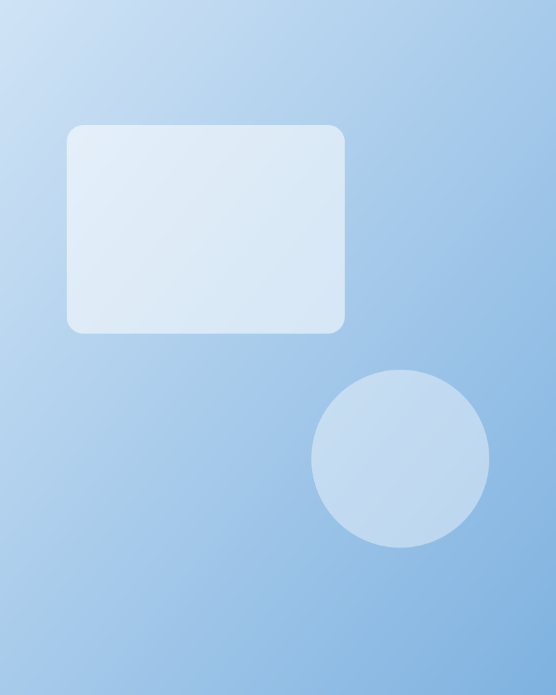
Estrutura em três blocos: tensão, prova e convite.
blog.exemplo.com.brPergunta direta com consequência e promessa com prazo curto lideram a retenção nos 40 vídeos analisados.
4 fontes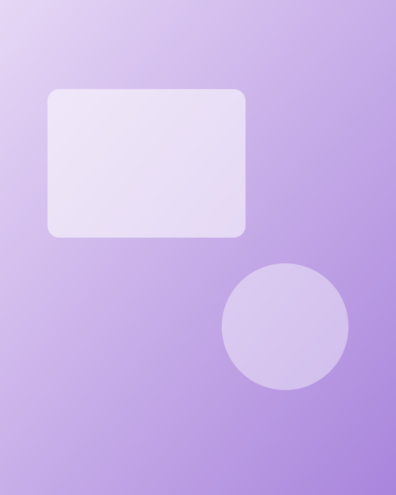
Série curta: "o que eu faria diferente" em cada projeto entregue este ano. Um vídeo por projeto, 30 segundos.
Estrutura em três blocos: tensão, prova e convite.
blog.exemplo.com.brPergunta direta com consequência e promessa com prazo curto lideram a retenção nos 40 vídeos analisados.
4 fontes<div class="he-mural" style="columns:2 220px">
<article class="he-clip" data-kind="note"><span class="he-clip__pin" title="Fixado"><svg class="he-i" aria-hidden="true" focusable="false"><use href="#he-i-pin"/></svg></span><div class="he-clip__body"><span class="he-clip__kind"><svg class="he-i" aria-hidden="true" focusable="false"><use href="#he-i-note"/></svg>Nota</span><p class="he-clip__text">Série curta: "o que eu faria diferente" em cada projeto entregue este ano. Um vídeo por projeto, 30 segundos.</p><div class="he-clip__tags"><span class="he-tag">série</span><span class="he-tag">vídeo</span></div><div class="he-clip__foot"><span class="he-who" data-who="you">Você</span><time>hoje</time></div></div></article>
<article class="he-clip" data-kind="link"><div class="he-clip__media"><img src="examples/media/i2.svg" alt="" loading="lazy"></div><div class="he-clip__body"><span class="he-clip__kind"><svg class="he-i" aria-hidden="true" focusable="false"><use href="#he-i-link"/></svg>Link</span><h3 class="he-clip__title">Como escrever legendas longas</h3><p class="he-clip__text">Estrutura em três blocos: tensão, prova e convite.</p><span class="he-clip__host"><svg class="he-i" aria-hidden="true" focusable="false"><use href="#he-i-link"/></svg>blog.exemplo.com.br</span><div class="he-clip__foot"><span class="he-who" data-who="ai">IA</span><time>ontem</time></div></div></article>
<article class="he-clip" data-kind="research"><div class="he-clip__body"><span class="he-clip__kind"><svg class="he-i" aria-hidden="true" focusable="false"><use href="#he-i-compass"/></svg>Pesquisa da IA</span><h3 class="he-clip__title">Ganchos que mais retêm em vídeos de programação</h3><p class="he-clip__text">Pergunta direta com consequência e promessa com prazo curto lideram a retenção nos 40 vídeos analisados.</p><span class="he-clip__sources"><svg class="he-i" aria-hidden="true" focusable="false"><use href="#he-i-check"/></svg>4 fontes</span><div class="he-clip__foot"><span class="he-who" data-who="ai">IA</span><time>seg</time></div></div></article>
<article class="he-clip is-reading he-glow he-glow--soft" data-kind="video" aria-busy="true"><div class="he-clip__media"><img src="examples/media/i3.svg" alt="" loading="lazy"></div><div class="he-clip__body"><span class="he-clip__kind"><svg class="he-i" aria-hidden="true" focusable="false"><use href="#he-i-video"/></svg>Vídeo</span><h3 class="he-clip__title">Corte da aula ao vivo</h3><div class="he-clip__foot"><span class="he-who" data-who="you">Você</span><time>agora</time></div></div></article>
</div>Tipos aceitos em data-kind: note, link, image, video e research. O mural (.he-mural) usa colunas CSS, quatro no computador e duas no celular.
A primeira tela responde a uma pergunta: o que precisa de mim agora? O destaque junta o número, um leque com as miniaturas do que espera e o botão que leva à fila. O leque abre um pouco sob o ponteiro.
<div class="he-hero" data-tone="orange">
<div class="he-fan" aria-hidden="true">
<span class="he-fan__card"><img src="examples/media/s1.svg" alt=""></span>
<span class="he-fan__card"><img src="examples/media/s6.svg" alt=""></span>
<span class="he-fan__card"><img src="examples/media/s10.svg" alt=""></span>
</div>
<div class="he-hero__main">
<div class="he-hero__count"><b>3</b>itens esperam a sua decisão</div>
<a class="he-btn he-btn--primary he-btn--lg" href="#destaque">Revisar agora <kbd class="he-kbd" aria-hidden="true">R</kbd></a>
</div>
</div>O progresso aparece na própria linha do item, com o nome e o quanto falta. O erro fica na mesma linha, com o motivo e o botão de tentar de novo. Ao arrastar um arquivo sobre a janela, a área de soltar cobre a tela.
<div class="he-stack">
<div class="he-upload"><svg class="he-i" aria-hidden="true" focusable="false"><use href="#he-i-video"/></svg><span class="he-upload__text">aula-3-bruto.mp4 · 62%</span><span class="he-upload__track"><i style="--p:.62"></i></span><button type="button" class="he-btn he-btn--sm he-btn--ghost">Cancelar</button></div>
<div class="he-upload he-upload--error"><svg class="he-i" aria-hidden="true" focusable="false"><use href="#he-i-alert"/></svg><span class="he-upload__text">capa.png passou de 20 MB. Reduza a imagem e envie de novo.</span><button type="button" class="he-btn he-btn--sm">Escolher outro</button></div>
<div class="he-dropzone he-dropzone--inline"><div class="he-dropzone__box"><span class="he-dropzone__ico"><svg class="he-i" aria-hidden="true" focusable="false"><use href="#he-i-upload"/></svg></span><b>Solte os arquivos aqui</b>Imagens e vídeos de até 300 MB. Ou <a class="he-link" href="#destaque">escolha no computador</a>.</div></div>
</div>Ajustes ficam em seções, uma por assunto, com o índice em pílulas à esquerda. Cada seção salva sozinha: o botão fica no rodapé dela e a faixa laranja avisa quando há mudança por salvar. No celular o índice vira uma fileira que rola de lado.
Os horários em que um item aprovado pode entrar.
Os horários em que um item aprovado pode entrar.
<div class="he-settings">
<nav class="he-sidenav" aria-label="Seções dos ajustes">
<a class="he-sidenav__item is-active" href="#ajustes"><svg class="he-i" aria-hidden="true" focusable="false"><use href="#he-i-calendar"/></svg>Agenda</a>
<a class="he-sidenav__item" href="#ajustes"><svg class="he-i" aria-hidden="true" focusable="false"><use href="#he-i-target"/></svg>Metas</a>
<a class="he-sidenav__item" href="#ajustes"><svg class="he-i" aria-hidden="true" focusable="false"><use href="#he-i-user"/></svg>Pessoas</a>
</nav>
<div class="he-formsecs">
<section class="he-formsec is-dirty">
<div class="he-formsec__head"><h3 class="he-h3">Agenda de publicação</h3><p>Os horários em que um item aprovado pode entrar.</p></div>
<div class="he-formsec__body">
<div class="he-field"><label for="aj-hora">Horário padrão</label><input class="he-input" id="aj-hora" value="18:00"></div>
<div class="he-toggle"><div class="he-toggle__text"><b>Publicar no fim de semana</b><small>Sábado e domingo entram na agenda.</small></div><button type="button" class="he-switch" role="switch" aria-checked="false" aria-label="Publicar no fim de semana"><span class="he-switch__knob"></span></button></div>
</div>
<div class="he-formsec__foot"><span class="he-help">Mudança por salvar</span><button type="button" class="he-btn he-btn--ghost">Descartar</button><button type="button" class="he-btn he-btn--primary">Salvar</button></div>
</section>
</div>
</div>Os componentes resolvem a aparência. O que faz o sistema parecer fluido no primeiro uso são estas regras, que valem para qualquer tela nova.
aria-live, camadas usam role="dialog" com foco preso, e o que está carregando leva aria-busy.Telas completas, feitas só com o hedesign e dados fictícios. Abra, redimensione a janela e troque o tema. O código de cada uma serve de ponto de partida.
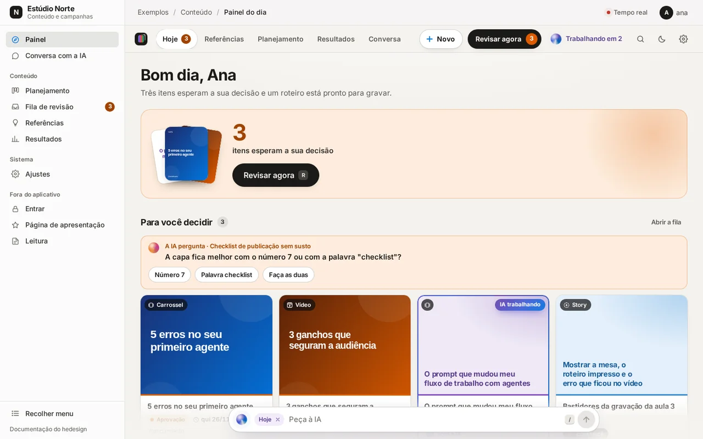
Painel do diaDestaque, pergunta da IA, cartões e campo de pedido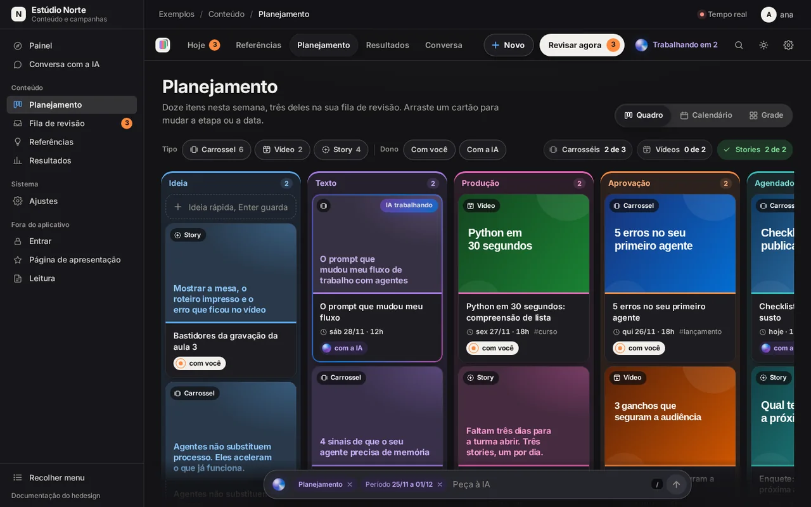
PlanejamentoQuadro com arrasto, calendário e grade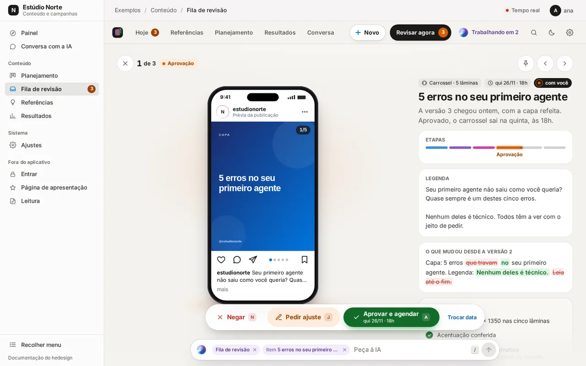
Fila de revisãoPrévia no aparelho, marcadores e barra de decisão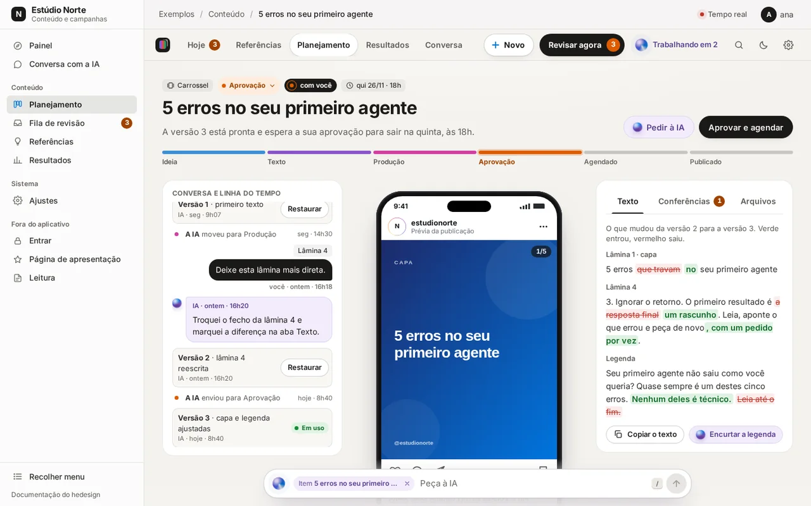
Detalhe do itemPassos, estúdio, conferências e conversa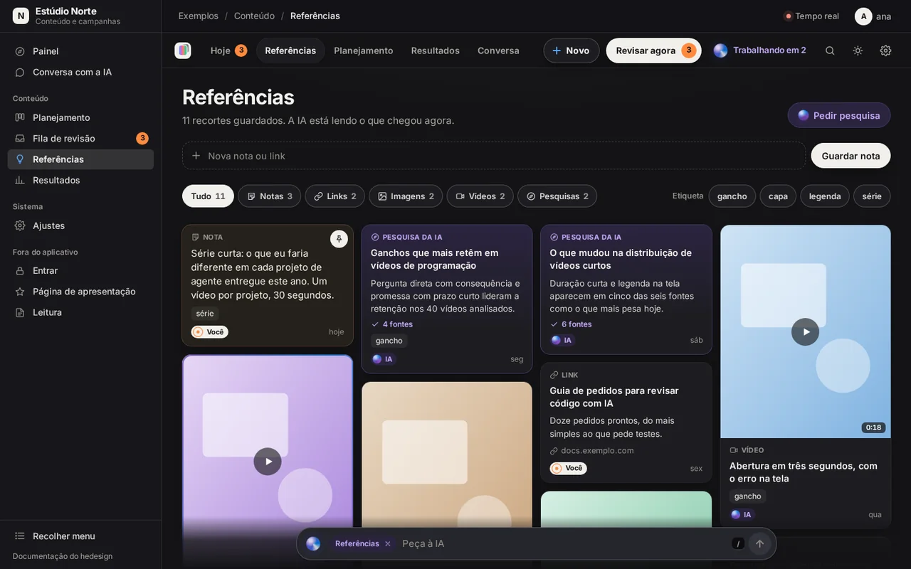
ReferênciasMural de recortes com captura rápida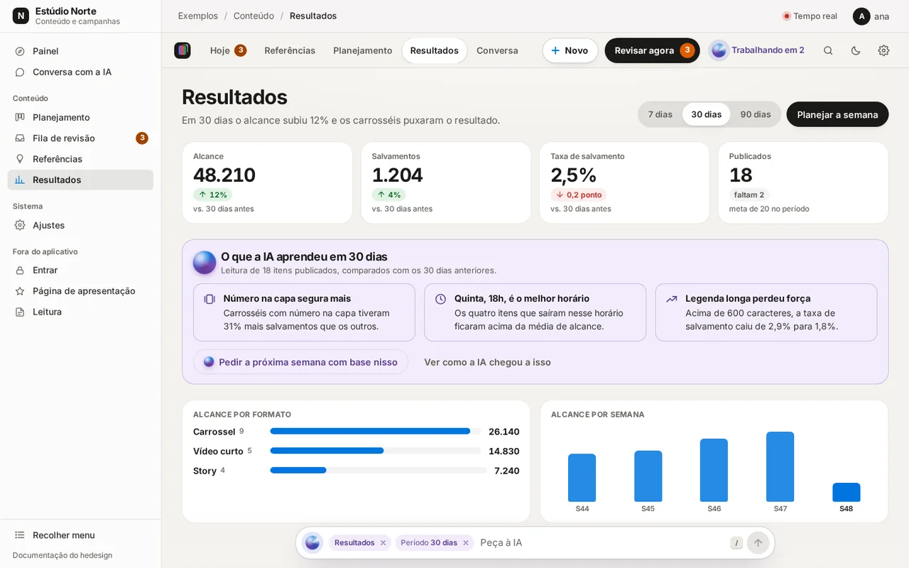
ResultadosIndicadores, barras e tabela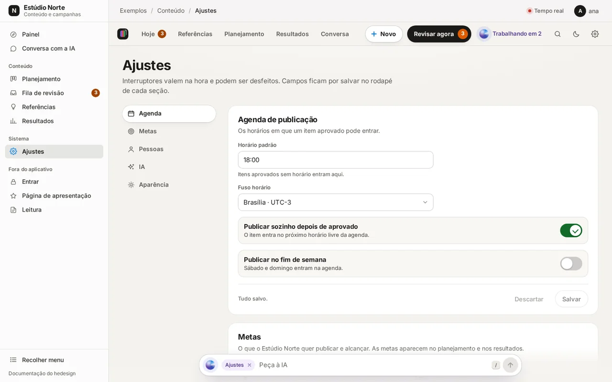
AjustesSeções, interruptores e salvar por seção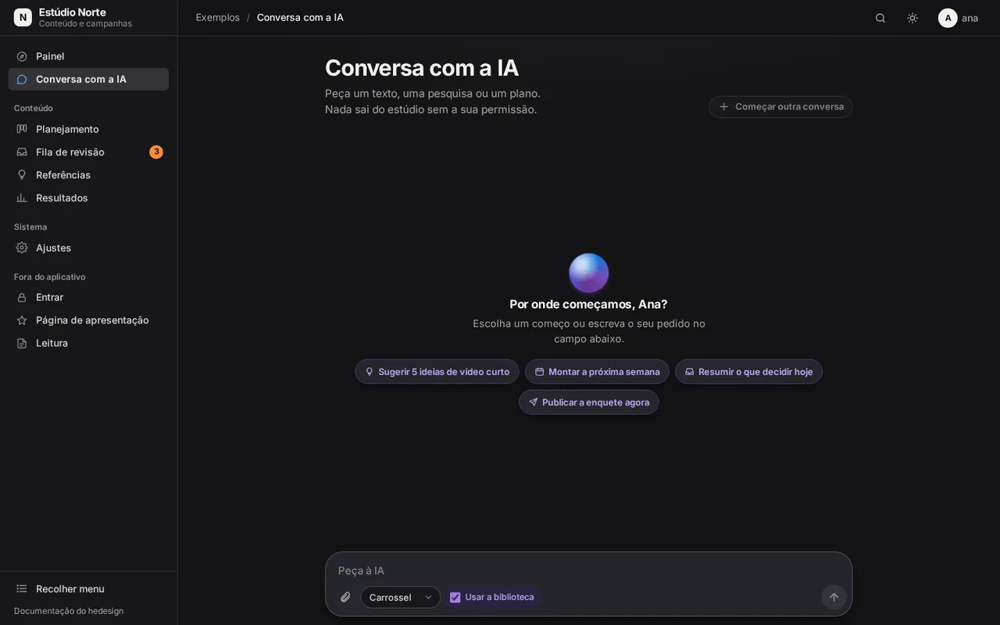
Conversa com a IAChat em tela cheia com o compositor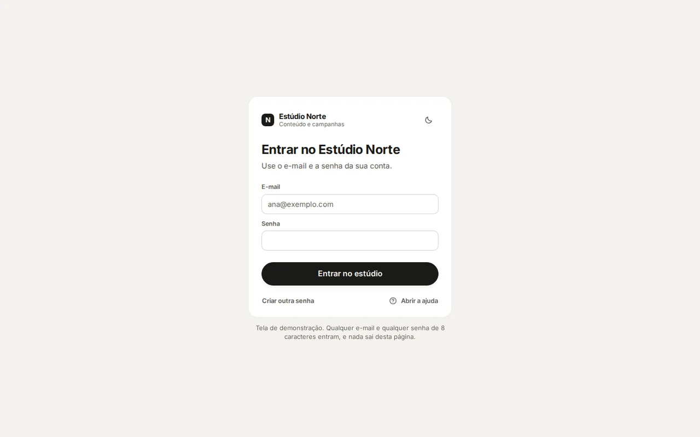
EntrarFormulário simples, sem a casca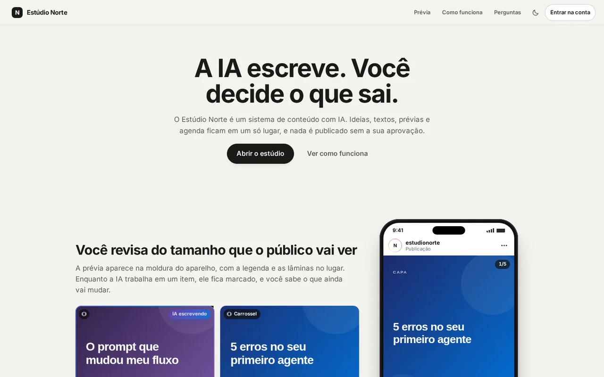
Página de apresentaçãoO mesmo sistema fora de um aplicativo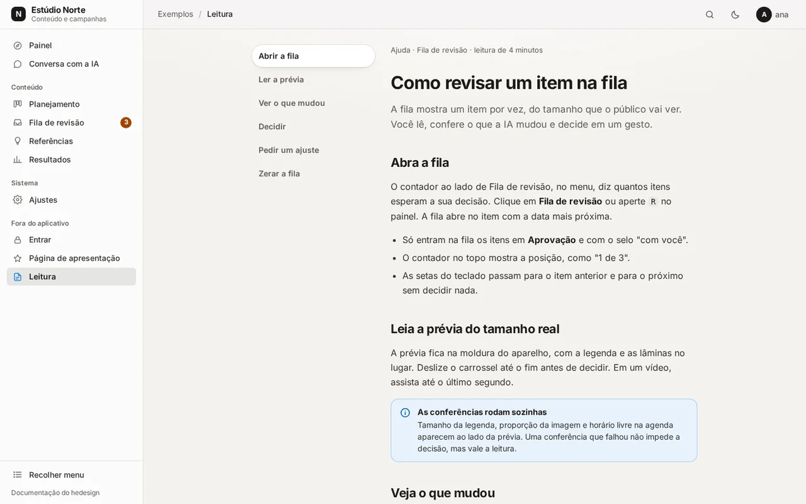
LeituraArtigo ou ajuda com texto corrido